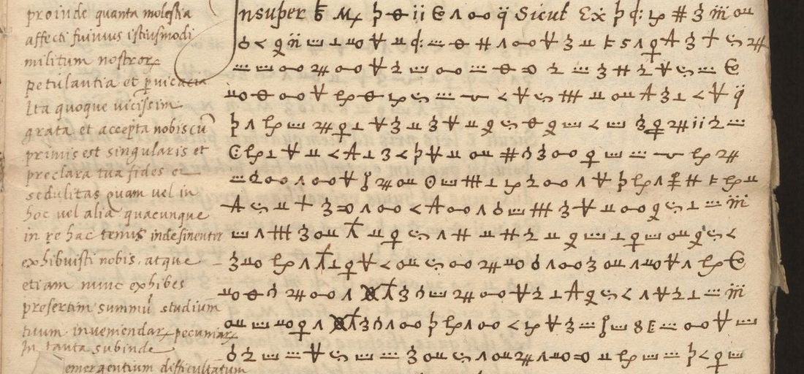
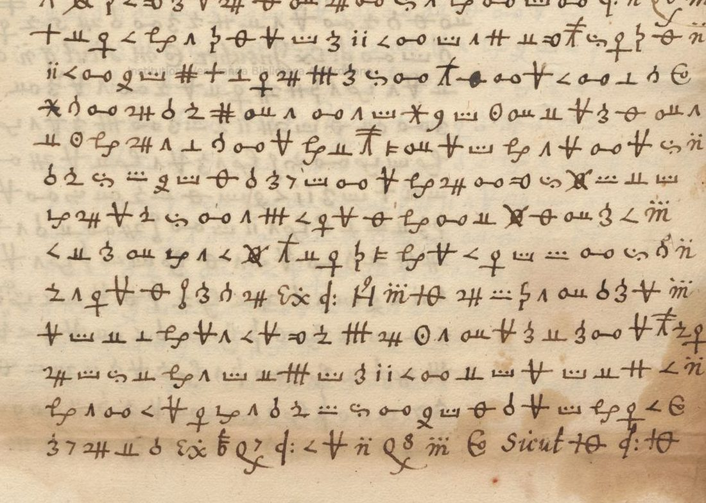

At a glanceKey from adjacent plaintext · complete
- The letters
- Ferdinand I, King of the Romans, to Giovanni Battista Castaldo, his commander in Transylvania: four Latin letters of 13, 15, 18 and 22 October 1552, from Vienna and Ebersdorf, each with long passages in cipher between clear Latin.
- Where
- Milan, Biblioteca Ambrosiana, G 275 inf., ff. 9r–14v, 34r–36r, 37r–42r and 43r–47r, digitised on the Ambrosiana digital library. Not on DECODE.
- The cipher
- About 70 signs in the table: two or three for the common letters, numerals for doubled letters (3 cc, 4 dd, 5 ff … 12 tt, 14 nn), nulls among them clear words such as Sicut and Insuper, and code signs for Hamet, the Pasha of Buda, Transylvania, Lippa, the Moldavian voivode, the Sultan and “the army”.
- How it was deciphered
- The letters of 13, 18 and 22 October carry a decipherment of the time in their margins; the letter of 15 October has none. The table was built from the glossed pages and tested on a held-out page, the 15 October letter was deciphered with it, three values corrected after the freeze (3 November), and on 26 November the three glossed letters were transcribed sign by sign and deciphered with the same table.
- What it says
- Mutinous German companies and doubtful Transylvanian estates, money and cloth sent, the Reich’s common penny under the Treaty of Passau, plague among the Turks before Eger, why Maurice of Saxony will not march to Eger, and an order to Castaldo to stay and hold the passes of Deva.
- Still open
- The value of code Q7 (once, 15 October) rests on a parallel in the 13 October clear text, not on a decipherment; a few faint or blotted signs; and about 40 words where the writer dropped or changed a letter.
- Credit
- The table and the reading of the 15 October letter are by the contributor WAINUT (GitHub lccompany, 3 November 2026). Brice Dudout made an independent reading of the 15 October letter (29 October 2026; 273 of 319 words sure, a partial decipherment by the project’s measure); his files are in
dudout/. The three glossed letters were transcribed and read here.
01 Four letters
The letters are bound in Ambrosiana G 275 inf. Each is in clear Latin with long cipher passages, some of them a page or more. Three of the four, those of 13, 18 and 22 October, have a decipherment in a second hand, written in the left margin and along the top and foot of the pages. The letter of 15 October has none.
| Letter | Folios | Cipher lines | Signs | Words | Words from the key letter for letter |
|---|---|---|---|---|---|
| 13 October, Vienna | 9r–14v | 158 | 3545 | 533 | 526 (98.7%) |
| 15 October | 34r–36r | 82 | 1904 | 317 | 311 (98.1%); 316 read as sense |
| 18 October, Ebersdorf | 37r–42r | 209 | 4586 | 740 | 732 (98.9%) |
| 22 October, Vienna | 43r–47r | 161 | 3564 | 612 | 584 (95.4%) |
Taken together, 2153 of the 2202 cipher words (97.8%) come out of the key letter for letter, and all of them read as sense. In the three glossed letters every word reads as sense, and in 1842 of their 1885 words every letter is the decryption’s. The rest are the writer’s own slips: a letter dropped at a line end (nu-|rum, gerendu-|sunt), casis for causis, pecueiarum.
02 The cipher
The table, in key.tsv, gives two or three signs to a, e, i, n, o, r, s, t and u, two each to d, l, m and p, and one to the rest. Doubled letters have numerals in alphabetical order: 3 cc, 4 dd, 5 ff, 6 gg, 7 ll, 8 mm, 9 pp, 10 rr, 11 ss, 12 tt, with 14 for nn. Nulls fall inside words as well as between them: epsilon forms, dotted n and m, an N and an M with a long tail, and the clear words Sicut, Insuper and Postq written among the signs. A rho with a numeral above stands for a name, and an H with a numeral for two more:
| Sign | Value | Where the value comes from |
|---|---|---|
| Q1 | princeps Turcarum, the Sultan | gloss of f. 41v |
| Q3 | Hamet (Ahmed Pasha) | gloss at the foot of f. 45v, f. 44r |
| Q4 | Bassa Budensis, the Pasha of Buda | gloss of f. 44r |
| Q6 | Transiluania | gloss of f. 9r |
| Q7 | Themeswar, Temesvár | once, 15 October; no gloss: the clear text of 13 October, f. 10v, names the same Turks “ad Lippam et Themeswarium” |
| Q8 | Lippa | gloss of f. 39v |
| H6 | the Moldavian voivode | gloss at the foot of f. 38v (“Modernus Moldauus”) and f. 39r |
| H9 | exercitus, the army | gloss of f. 39v and f. 45v |
Corrections are made by writing a sign above the line between small strokes; a few signs are struck through and rewritten.
03 What the letters say
13 October. Ferdinand has learned “quam sinistre res ille nostre in partibus regni nostri [Transiluanie] succedant”: two companies of German foot have mutinied, and the estates seem “ad sinistram uergere”, so that Castaldo fears being driven to think of his own safety. He praises Castaldo for scraping together twenty thousand florins for the heavy horse, sends money and cloth by Captain Stephen, to be met at Cassovia and escorted into Transylvania, and explains that Maurice of Saxony, encamped at Győr, will try to draw the Turks off Eger. Castaldo is to oppose the enemy, but not to throw himself into grave danger until help comes.
15 October. Ferdinand would have liked a feint towards Lippa to draw the Ottoman army off Eger and support Maurice; he sends money and a large quantity of cloth and expects the enemy to be drawn off or driven off by winter. (This letter’s reading is the contributor’s of 3 November; it is summarised here and given in full below.)
18 October. The cavalry of Fabian von Schönaich seeks “per phas et nephas” a chance to slip away. Money is coming: the common penny voted by the estates of the Empire “secundum conclusionem tractatus proximi Pataviensis” is being collected. Ferdinand asks for a feint towards Lippa, reports from a spy that plague kills three to four hundred a day in the Turkish camp, forbids Castaldo to leave the kingdom, and sets terms for any peace with the Turks: the tribute may be paid in Ferdinand’s name, or in the name of the three nations, but the kingdom must stay in his allegiance.
22 October. Maurice will not march on Eger: his army “non est usque adeo numerosus”, he lacks light horse, and a defeat would throw Hungary into confusion. He raids instead towards Veszprém and Székesfehérvár. Eger still holds and winter is coming. Castaldo must stay in Transylvania, because the Turks at Lippa grow daily and the passes of Deva would be left open, while Hamet stays with the army at Eger.
The English of all four letters is in the full texts below. The glosses were used to check the readings; where they differ the reading follows the cipher, for example “in dubitationem deducti” (13 October) and “agasque constanter et fortiter” (18 October). (Eger was besieged by the Ottomans from September to 18 October 1552; general reference, not checked further.)
04 How it was deciphered

The table (3 November 2026, the contributor WAINUT). The cipher of ff. 9r–10r was cut into shapes, clustered and labelled with no language; the labels of ff. 9r–9v were aligned with their gloss by expectation-maximisation, and the table was frozen before the 15 October letter was deciphered. As run, 14 sign values were seeded and seven nulls set by hand; a rerun from fully random tables gave the same 36 letter values. Three values were corrected after the freeze on the 15 October pages. On held-out f. 10r the frozen table found 442 of the gloss’s 518 letters in order (85.3%), against at best 41.5% for 100 shuffled tables. The 15 October letter was then transcribed by eye and deciphered: 316 of its 317 words. An independent AI reader transcribed f. 34r blind (6 differences in 350 signs).
The three glossed letters (26 November 2026). The 35 pages were segmented anew, and a shape classifier was trained on the 15 October transcription (92% cross-validated). Cipher lines were marked by eye, 528 of them. A search guided by a Latin letter model chose among the classifier’s top four labels for each sign with the key fixed; the raw decode already followed the glosses. Then every line whose decryption differed from the reading was checked by eye on strips with the labels under the signs, and corrected or typed whole. The pass was not blind: the reader knew the key and the text. A separate AI agent then transcribed twelve random lines (273 signs) blind, from the images and the sign names only: 98.1% of the decrypted letters agree, and in the four lines that differ its text is not Latin and ours is. The words that come from the key letter for letter rose from 75%, 73% and 59% to 98.7%, 98.9% and 95.4%.
The sister letters added six signs to the table: two nulls (the long-tailed N and M), the numerals 4 (dd, reddentur) and 12 (tt, mittere), and the codes H6 and Q1.
05 What remains uncertain
- Q7 (15 October, f. 34r l. 17), paired with Lippa: “Turce illi ad [Q7] et [Lippa] relicti”. No rho 7 occurs in the three glossed letters, so no gloss gives it. The letter of 13 October says in clear, f. 10v: “ad propulsandos pauculos illos Turcas, qui ad Lippam et Themeswarium remanserunt”: the same Turks, the same two places, the same verb, two days earlier. Q7 is read as Themeswar (Temesvár) on that parallel.
- Doubtful signs: the numeral at 34v.06 (8 kept), faint or blotted signs at 35r.24, 35r.27, 34v.05 and 35r.18, and some twenty interlinear, blotted or unclear signs in the glossed letters, each marked
?in the transcriptions and listed in NOTES.md. - The writer’s slips: about 40 words in the glossed letters where the cipher itself drops or changes a letter. They are restored from sense and not counted as coming from the key.
- Only the cipher passages are deciphered. The clear text between them, and a few autograph lines under the date on f. 14v, are not transcribed.

Full texts
The transcription and the decryption of every document on this page, so that the reading can be used and checked. Short files are shown here; all are in the repository.
13 Oct 1552, f. 9r foot to f. 14v
Ferdinand is troubled by the mutiny of two companies of German foot and the doubtful loyalty of the Transylvanian estates, praises Castaldo for raising 20,000 florins for the heavy horse, sends money and cloth by Captain Stephen, explains that Maurice of Saxony is camped at Gyor to draw the Turks off Eger, and tells Castaldo to oppose the enemy without risking a grave defeat.
Transcription
# Ferdinand I to Castaldo, letter of 13oct: cipher signs line by line (names: sign_inventory.md). # Machine labels (scripts/seg3.py, classify3.py, beam.py) corrected by eye on review strips (eye_13oct.tsv). # x? = doubtful. Line ids: page.line as in cipher_lines.tsv. 9r.20 n: Nx g U F I: Ex S 3 ou 3 oo V Ls A Hs < oo 3 7 A ou * n: 9r.21 oo V Hs < m: 3 uo B u Hs V Z# C U oo Hs A O. ou 3 uo H2 oo m: 9r.22 +A Ls Z# +Th m: Q6 Ex Eo S U 3p A d F ou V +Th ou 3 D Z# Ls 9r.23 U I: g E: u I: P H2 ou V U I: 1 P 3 V A Ls B A Ls U z P F P Z# 9r.24 V < Hs g U < =O U A O. < Ls I: u ou Th Hs E: D B A d z V U I: Ex m: 9v.3 Eo P H2 +Th Eb +Th Eb d: K Th Hs V A oo g U 1 S +Th d < E: u I: 9v.4 U S g E: A U ou F P U I: P 1 V F B Ls F P V 3 S A g U z V Z# m: 9v.5 q: C U oo ou H2 S V Hs 3 oo I: Z# 12 < Hs A U H2 Hh A C 1 oo S < oo A 9v.6 O. A ii < Hs 3 ou V Z# V A * g U F I: 3 ou H2 d A d z < uo V A oo 9v.7 < V 3 ou P Th uo S V 1 ou V A oo S A Hs A O. ou 3 P Th H3 < 9v.8 3 7 Z# ou Th S V Ls Z# A X K Z# C < u ou V 1 P g U Th d u m: 9v.9 8 H2 =O Th ou * uo Th C oo P U Ls A u d oo 3 ou Z# S V Ls +Th 9v.10 1 I: U A Ls O. < Ls A U 3 d A u ou V U Hs 3 V u g U H2 =O d U C 3 9v.11 V A oo +A < Z# 7 H2 Hs ~ D U Th Hh ~ ou V 1 +A A < V S V U d 3 9v.12 Z# oo V u ou =O A D u =O 3 d P Th D B U H3 S U I: 3 Ls Z# Eo m: 9v.13 g U Th d K H2 oo V A S ou U uo g U F I: B Th V U 3 Eb ii A ou V +Th 9v.14 uo A D B < =O A V U u z wv S 3 U oo S u H3 U +A < P H2 O. m: 9v.15 3 V 1 Ls A +Th m: Eo Insuper Ex d: Sicut Ex q: 3 oo V u oo 1 9v.16 uo A u ou 3 D ~ D ou Th S V Ls U I: 3 U S +A Z# oo d < q: m: 9v.17 P u oo 3 oo ou Th ou U oo g U A u d A H2 Hh A U 3 V < Ls 9v.18 B < Hs P U H3 < Hs U ou V 1 V g U < +A u ou +A Th q: Eo m: 9v.19 H3 3 C A ou V z H2 Hs Z# A V 3 u D F ou Z# D * Z# ou V A +Th 9v.20 7 < X 3 D U oo V U u I: oo U I: 1 D d Z# H3 z O. A ou Ex 9v.21 +A 3 u I: oo H2 7 3 P z V U =O Z# ou A D < V + 3 d < I: d: Ex m: m: 9v.22 g U u D u =O K Z# C U 3 oo V Z# 3 ou P H2 10 1 d A ou Eo n: d: 9v.23 =O 3 oo B Hs Th 3 uo V A O. Ls u oo A U V Th +A u H3 Z# wv +Th 9v.24 Ls A + u V Th Hs U D O. Ls u ~ 3 Th Hs Z# oo? u Ls D u V U m: 9v.25 Hs < A g U 3 V ~ I: oo H2 H3 ~ V 3 Th ou A U Z# O. z ou 9v.26 +A Z# D 3 7 A + Hh H2 Ls < ou Z# oo uo A P ou Th uo 1 Hh 3 u Ex 9v.27 oo U D u B Ls H2 d ~ u C U oo 3 7 Z# oo P Th K H2 Ls m: 9v.28 V 3 C U S O. A Hs D u ou Th Hs ~ D B < =O Z# V U I: q: ~ +A q: 9v.29 A H2 Ls U I: Th B < Hs u 1 d Ls A B < 7 A ou =O H2 oo 1 C m: 9v.30 < X P ~ Hs oo 3 H2 ou Z# C ~ S K Th S V A oo q: U m: V n: 3 m: 10r.1 Insuper Eb Mx B Th ii Eo A oo q: Sicut Ex B d: Hs H2 3 m: ou 10r.2 d < g n: U 1 uo V u d: D Th Hh A oo V 3 u F 5 A P +A 3 + ~ Z# 10r.3 D U oo Z# oo V z U oo D Th =O z D 3 Hh z V ~ D Eo 10r.4 ou Th oo V Ls Th Hs ~ D wv < V ~ H3 u ou +A 3 1 < V q: 10r.5 +Th B A Ls U Z# P 1 V 3 u 3 V u g ~ Th g U < U 3 P Z# d: ii z D 10r.6 O. Ls 1 V u < +A 1 3p < B V u ou H2 C 3 oo P U D wv Ls Z# m: 10r.7 D z oo A oo V S Z# ou O. U H3 1 Hs z oo A V B Ls A P Hh F Ls u 10r.8 +A ~ u + 3 =O A oo < +A oo A d U H3 3 V u oo g ~ 1 D +Th 10r.9 U A H3 3 ou K u P ~ A Hh u Hh z u g U 1 P U ou g +Th ~ < 10r.10 3 uo Ls A K 1 P V < ou ~ oo Z# uo d A oo 3 ou A uo V A Ls Eo 10r.11 uo Th C Z# oo A X K 3 C U Z# oo V z 1 +A g ~ < A V z 1 D m: +Th 10r.12 n: ou U uo P A X K 3 C A oo B Ls A oo < Hs V 3 D S U 8 E: D oo V U d: 10r.13 Ex Ex d 3 U D V ~ U D 3 ou ~ A ou Z# A uo =O u Ls U D B < P U m: 10r.14 ou 3 1 Ls U D 3 ou V u uo +A u oo Ex ~ C z uo d A < I: A Hs n: 10r.15 O. A ou +A z U I: =O 3 5 z P U Hh V u V ~ D + Ls A g U < ou 10r.16 +A 3 u F d Ls A oo V u ~ Hs u ou =O U I: Hh 1 C u oo P A ou 10r.17 V A D ou Th uo ou U ou g U 1 D Ls A Hs ~ D ou Th oo V n: 10r.18 Ls u Hs ~ D oo V 1 +A U I: Eo m: d: Sicut Ex q: Eb n: Nx Ex 10r.23 +Th Mx Sicut Ex d: ou m: u n: D Eo g U Th Nx 1 d 10r.24 =O A n: + A P V ~ D B A P U ou 3 u Ls U I: P U Hs u ~ 3 +Th 10r.25 D ~ oo V z C Z# F Hh 3 1 D ou Th uo 1 d A H2 B u Ls U F I: 10r.26 B A P U < 3 u Hs U D oo ~ 8 u D +Th A V ou Th ou D ~ H3 10r.27 V Th I: 3 ou H2 Ls < D B u 14 Th Ls U I: g U u ou V 3 Eo m: 10v.1 Sicut Nx V d: u +A Eo A m: D n: B Ls Th Ex oo H2 q: H3 ~ 10v.2 +A 3 Th ou < n: O. A ou V Z# U D ou H2 oo V Ls u Hs U I: 10v.3 B A Ls d: P 1 wv 3 V u ou A ~ I: oo V < B K F ou ~ D 10v.4 m: d: 3 oo q: V K U P u 5 A 10 3 Mx n: Nx q: m: Eo Ex d: n: 10v.7 Mx d: A n: V q: 10v.8 Eo P u ii Th U 3 1 I: U oo g ~ A D Z# 12 A Ls < oo g U 3 m: 10v.9 A Z# ~ S D Th d z B u 14 Th oo u V g +Th ~ A wv A P ~ 10v.10 uo z u oo Z# ou +Th Q6 d: m: P Th D 3 V A ou +A U Ls < V 10v.11 =O < d U P u uo +A Ex Sicut Mx q: Nx d: 10v.26 d: +Th A Ex H2 Ls U I: Mx g ~ Nx < q: n: d: 10v.27 m: u ou +Th 3 D Z# Eo z ou Eb d U C Z# V u +A Z# Th q: d: m: 11r.2 ou d: A n: D q: Sicut =O Eo < d U P n: V 3 q: Ex d: 11r.3 Mx Z# Nx V u n: g ~ Th d P H2 ou oo z H3 3 1 A V q: 11r.4 z ou oo V 3 +A U V u ou Th oo V Ls Z# d: Mx H9 n: 11r.5 +Th ou H2 uo oo B A Hs ou < ou d Z# u ou 3 D Th P H2 I: 11r.6 B Hs A K < ou =O A Ls < ou A g U < u ou V P U D g ~ Th 11r.7 3 7 U oo V Hs Z# oo S 1 X Th ou 3 A =O U X D u ~ Ls Z# d: 11r.8 +A z U oo A H3 < P V Th Hs u d z F U Ls 3 ou ~ D d: 11r.9 ou U uo P P u oo V Hs 1 D A V F +A U oo A S n: V q: m: 11r.10 +Th Mx K n: 11r.11 H2 oo V A D u C Th 9 U O. ou 1 V 3 Th ou A Ex F O. Hs q: +Th 11r.12 Z# < u C oo V Ls 1 K u +A 1 V g U A ~ < Hh B A ou z V Eo 11r.13 ~ oo A ~ D u d =O z ii Th H3 ~ V 3 H2 ou < I: P * O. 1 V m: 11r.14 ~ A Hh oo u H3 V < D F Hh z Th d z U A Ls +A u +A m: 11r.16 d: Nx A n: X +Th 11r.17 Eo n: Th 9 z d H2 Eb + Ls u ~ < ou I: u Ls P u d: V q: n: 11v.22 oo q: z +Th I: d: E: Hh 11v.23 u V g U A n: + 3 d < H3 A oo q: Ls A O. ou Z# P Th Ex 11v.24 H3 A d: < V D z Hh 3 V < oo uo Th oo V Hs Z# n: 3 oo 11v.25 V K Z# P Eo A Mx X 3 oo d: V < ou m: V A n: oo q: 11v.26 B Eo A Ls +Th P n: < wv m: A d: Ls 3 q: ou Mx V Nx 12r.2 Nx d: u C n: oo g U A =O U C z Th q: B Ls H2 I: 12r.3 B V z Th Ls A oo m: < V u H3 F P Ls 3 Th Hs A oo Z# ou q: 12r.4 oo A Ls U z V Z# z oo uo Th S V Ls 3 oo Hs A 4 < ou n: 12r.5 V U Ls +A z C 3 g ~ A =O < A Th u d g U H2 =O 1 C K H2 d: 12r.6 S V Z# C U oo V A ou ~ ou g U u I: P H2 D B A 7 3 B Th m: 12r.7 V ~ z ii A oo P Ls z C Z# S ou A D wv A =O < oo u Hh ~ +Th 12r.8 +A A V oo u V 1 D u ou X z A P Th O. z V u ou d ~ D 12r.9 uo Th ou d: < Ls z V m: 12r.10 m: Eo n: +Th Ex n: q: V A U +A ~ 3 Ls U D + Th 12r.11 Eb Hs V A D u P Z# ou Ls A D Z# H3 3 V u Ls z A X B < Hs V n: 12r.12 U I: V 1 Hh < oo P Th O. z +A u V 3 H2 ou A oo A X 1 ou 3 m: m: 12r.13 I: Th d < B H2 oo z V U Ls ~ D S A =O B H2 V 3 U S Th m: m: 12r.14 D ou z u P Th ou oo z Hh Z# u 1 P Z# ou oo V z +A ~ 12r.15 n: V u V U u U V K u P +A A ou ~ oo u d ou Th oo n: 12r.16 +A Ls U D Hs A O. ou Th Ls ~ D g U A < V =O H2 D z ou 3 n: 12r.17 H2 Ls U I: ou Th oo V Ls Th Hs U D ou A P ou Th uo d: 12r.18 U ou z ~ A Hs oo < Ls A z B U C H3 3 P A P K Ls Z# oo m: 12r.19 V z u ou A g U Th Ls ~ D Ls A oo K 3 P 1 O. z V U Ls q: Eb 12r.20 P Th 8 H2 d U D V ~ u H3 1 U d A < V u I: B Hh z + 3 P u 12r.21 +A Z# Th ou A ou Th uo =O z oo Z# U ou P V U D B A Ls d: 12r.22 U 3 u I: oo Th Hh z V A 3 ou d ~ oo V Ls z < P Th ou 12r.23 oo V u ou +A z A < V d Z# H3 z O. A ou V 3 < V U +Th A 12r.24 =O z Ls A P V U Hs ~ D oo A ~ Ls A Hh 1 V ~ Ls U I: d: 12r.25 +Th Ex Eo 12v.2 d: Mx A Nx 12v.3 +Th V g q: U u ou V Th B < Ls A Eo P Th +Th ou g U A 12v.4 Ls u ou +A ~ Ls 3 B oo z oo A Ls < ou Z# ii z D < Ex 12v.5 d: m: Ex d: +Th? n: ou Th uo =O U I: u ou H2 C 3 oo B Hs A oo m: 12v.6 V Z# V ~ D < Eb ii A u d g U Th d U 3 O. Th Ls A Ex 12v.7 +A Hs F P +A u V U oo P U D A z ~ oo S < Hs A n: 12v.8 uo 3 V 1 +A A Z# uo z V 3 d: V d: m: A ou < Eo u I: U Hs q: 12v.20 Mx g Nx U A D d: u d Ex D Th d U n: D q: Eo 12v.21 +Th S A Hs < ou 3 d: V u S m: oo E: u Th B z ou Eo 1 12v.22 V U Ls +Th H2 C H3 Z# V z Nx oo Mx U n: I: ~ d: oo 13v.14 +Th Ex B d: Ls A Eo V < q: Hs A u +Th g U Th d 13v.15 V 3 C Z# d: oo U wv A Ls z Th Ls 3 C ~ oo d z A n: m: 13v.16 C U oo ou Th uo oo < I: +Th A? Hh d: P H2 8 3 oo A Ls 3 m: m: 13v.17 D ~ oo U V Ex V < B Ls A P z wv ~ < U V B H2 V A Ex 13v.18 P U z ~ oo B A Ls oo Th ou 1 D B H3 U Ls 3 D z d: 13v.19 + u P 3 D ~ oo A V d < 3 ou d < O. A ou V < oo n: 13v.20 z 7 u oo ou H2 oo V Ls 1 oo 3 ou P u oo V Hs Z# S +Th 13v.21 H3 H2 P Th u Hh 3 g U Th I: U ou Z# V Th A V z d H2 13v.22 uo < Th S U oo V z uo A Ls < oo ou Th uo + U 3 V +Th 13v.23 q: u Hh Z# u D A ou oo A V U Th H3 U ou V u oo q: d: 13v.24 uo Th oo +A Ls u g U F D ~ V K Th oo V 3 g U u ou Eo 13v.25 V 3 oo P U ou g U A B Th ii A oo U z Ls 3 C U oo +Th +Th m: 14r.1 Insuper d: +Th V Mx < Nx A +A Sicut 3 q: 7 Th oo Ex H2 Eo 9 14r.2 +Th * ou A Ls < oo ou < g U A V u I: < ou z ou A U Z# d: =O 14r.3 =O < ou oo 1 U V O. Hs 1 ~ < u H3 Z# g U H2 d =O z oo P Ls 14r.4 3 I: < ou P Th ou Z# Ex z P < Ls A oo d Th ou < P U u Hh 3 n: d: 14r.5 =O z H2 Ls u 1 P D u 3 H2 Ls u F U X z Hh Z# u V 3 m: 14r.6 C Z# oo U C D z ou Z# oo V Ls u Hs < ou V ~ Ls d: 14r.7 < z U oo A g U Z# d < D u ou Z# D 3 F d K U P oo ~ m: 14r.8 I: U oo ou < D B < U V K Th oo V 3 C U oo V < Ex 14r.9 g ~ u V A ou U oo S 3 ou < O. Ls u U 3 H2 Ls z Eo n: 14r.10 B A Hs 3 P U Hh Th + z A Ls Z# B Th V < Hs z V n: + H2 Ls 14r.11 V Z# V < Ls Th 9 H2 ou u oo P U D < ou 3 D ou ~ ou P m: 14r.12 D Z# H3 3 V 3 C U oo z 7 Z# oo ou Th S V Ls 3 oo Ex 14r.13 < V B < P U ou 3 Z# oo d: < V B 1 14 z oo S U C ~ A 14r.14 ou Z# u D U S ou Th uo oo H2 Hh U D 3 B oo Th oo 14r.15 U A Hs ~ D Mx < Nx V 3 u D Ls A O. ou Z# P H2 Hh u oo 14r.16 uo Th S V Ls * oo q: =O 3 P V Th +A U Th u ~ d z < ou m: 14r.17 V A oo < V D F O. 3 oo u ou 3 D 1 V Th oo + * Ls A 14r.18 P * ou + 3 d Z# D U oo d: g ~ Th Ls U D < V 3 u D 14r.19 Z# ou B Th oo V < Ls U D B u V < Ls ou u I: A V Ex 14r.20 P Hh < D A ou V < D P ~ Ls u D I: 3 12 < d: ou d z oo n: 14r.21 B < P U uo Z# 3 oo A V u H3 3 Z# oo ou < P A d: ii u Ls 3 Z# S Eb 14r.22 Ls < C U oo Th Ls d 3 ou 1 ou =O 3 oo d: K u C < Ls A n: 14r.23 oo Eo V U d Ex < C q: 3 d: D q: U +Th oo Mx Eb Ex Eo n: d: 14v.2 Nx Mx U d: oo +Th g Ex U q: < n: u d D 3 7 < m: 14v.3 K Th Eb D z ou Eo < n: oo n: P Th ou V 3 uo < ou V A S d:
Decryption
# Decryption of transcription_13oct.txt with key.tsv; nulls dropped; (x) = doubtful sign. 9r.20 quamsinistreresilleno 9r.21 streinpartibusregninos 9r.22 tri[Q6]succedantnimir 9r.23 umquamcontumaciterperuicaci 9r.24 terqueduegermanorumpeditum 9v.3 cohortesquasdeuam 9v.4 usqueunacumcatapractisequiti 9v.5 busnostrismittereuolebassese 9v.6 gesserintiteoquaminodedientes 9v.7 etinconstantesseregnicole 9v.8 illinostriexhibeantacquoda 9v.9 mmodononobscureadsinistr 9v.10 amuergereuideanturitaquoddubi 9v.11 testeillorumuoluntateetstudi 9v.12 istandemadidcompulsumiri 9v.13 quodhostesnunquampotuissent 9v.14 nempedetuaipsiussalutecog 9v.15 itareistasa 9v.16 neanimumnostrumiustisde 9v.17 casisnonusqueadeoleuiter 9v.18 perculeruntatquetanto 9v.19 libentiorietiamanimointe 9v.20 lleximustuamsumamdiligen 9v.21 tiamsollicitudinemetfidem 9v.22 quamadhibuistiincorraden 9v.23 disprointegraseutotalip 9v.24 refatorumgrauiori(s)armatu 9v.25 reequitumsolutioneuigin 9v.26 timilleflorenisnecnonalia 9v.27 sumaproduabusilliscohor 9v.28 tibusgermanorumpeditumut 9v.29 eorumoperaadrepellendosab 9v.30 excursionibushostesuti 10r.1 possesproin 10r.2 dequantamolestiaaffectifui 10r.3 musistiusmodimilitum 10r.4 nostrorumpetulantiaet 10r.5 peruicatiaitaquoqueuicissim 10r.6 grataetacceptanobiscumpri 10r.7 misestsingularisetpreclara 10r.8 tuafidesetsedulitasquam 10r.9 uelinhacuelaliaquacunque 10r.10 inrehactenusindesinenter 10r.11 nobisexhibuistiatqueetiam 10r.12 nuncexhibespresertimsummumstu 10r.13 diumtuuminueniendarumpecu 10r.14 niarumintantasubindeemer 10r.15 gentiumdifficultatumfrequen 10r.16 tiaadrestaurandumlabascen 10r.17 temnonnunquamrerumnost 10r.18 rarumstatum 10r.23 namquoad 10r.24 defectumpecuniarumcuraui 10r.25 mustibialiamnonadeoparuam 10r.26 pecueiarumsummametnonmul 10r.27 tominorempannorumquanti 10v.1 tatemprosolu 10v.2 tionegentiumnostrarum 10v.3 percapitaneumstephanum 10v.4 isthucafferri 10v.7 et 10v.8 cassouiamusquemitteresqui 10v.9 eiusmodipannosatquepecu 10v.10 niasin[Q6]comitenturet 10v.11 deducant 10v.26 eorumque 10v.27 animiindubitatio 11r.2 nemdeducti 11r.3 itaquodconsiliaet 11r.4 institutanostri[H9] 11r.5 nonspernendianimocom 11r.6 prehenderenequeantcumquo 11r.7 illustrissaxonieduxmauri 11r.8 tiuselectoradiaurinum 11r.9 nunccastrametatusest 11r.10 h 11r.11 ostemaboppugnationeagr 11r.12 ieabstrahatatqueuelpenit 11r.13 useumaddissolutionemcogat 11r.14 uelsaltemaliodiuertat 11r.16 ex 11r.17 oppidofrauenmarcat 11v.22 simul 11v.23 atquefidelesregnico 11v.24 leetmilitesnostriis 11v.25 thicexistentes 11v.26 perceperint 12r.2 absquedubioprom 12r.3 ptioresetalacrioresin 12r.4 seruitiisnostrisredden 12r.5 turtibiquedeeoadquodabho 12r.6 stibustenunquamcompellipo 12r.7 tuissescribisnempedesalu 12r.8 tetsatamanxiecogitandum 12r.9 nonerit 12r.10 teutuirumfo 12r.11 rtemacinremilitariexpert 12r.12 umtalescogitationesexani 12r.13 modepositurumsedpotiuso 12r.14 mniaconsiliaacinstitu 12r.15 tatuauthactenusadnos 12r.16 trumregnorumqueetdomini 12r.17 orumnostrorumnecnon 12r.18 uniuersereipublicechris 12r.19 tianequorumreshicagitur 12r.20 commodumtualaudeetamplifica 12r.21 tionenondisiunctumper 12r.22 uiamsoliteindustriecon 12r.23 stantieetdiligentietue 12r.24 directurumseurelaturum 12r.25 12v.2 e 12v.3 tquantopereconque 12v.4 ranturipsiserenissime 12v.5 nondumanobispres 12v.6 titumesseadquoduigore 12v.7 tractatuscumeiussere 12v.8 nitateinititeneamur 12v.20 quemadmodum 12v.21 serenitassuaopina 12v.22 turoblitisumus 13v.14 pretereaquod 13v.15 tibisuperioribusdie 13v.16 busnonsem(e)lcommiseri 13v.17 musutteprecipueutpote 13v.18 cuiuspersonamplurimi 13v.19 facimusetdeindegentes 13v.20 illasnostrasincastris 13v.21 locoaliquomunitoetido 13v.22 neosustineresnonfuit 13v.23 aliamensetuoluntas 13v.24 nostraquamuthostiquan 13v.25 tiscunquepossesuiribus 14r.1 teetillosopp 14r.2 oneresnequetamenineuid 14r.3 densautgrauealiquoddiscr 14r.4 imenconiiceresdonecuali 14r.5 dioraacmaioraauxiliati 14r.6 bisubministrarentur 14r.7 eiusequidemanimiadhucsu 14r.8 musnempeuthostibuste 14r.9 quatenussinegrauiori 14r.10 periculofieripoteritfor 14r.11 titeropponascumenimnunc 14r.12 militibusillisnostris 14r.13 etpecuniisetpannissubue 14r.14 niamusnonsolumipsos 14r.15 uerumetiamregnicolas 14r.16 nostrosdictotuoaudien 14r.17 tesetmagisanimatosfore 14r.18 confidimusquorumetiam 14r.19 inposterumpaternamet 14r.20 clementemcurammittendis 14r.21 pecuniisetaliisnecessariis 14r.22 rebusordinandishabere 14r.23 studebimus 14v.2 usqueadmille 14v.3 hominescontinentes
Reading
# Ferdinand I to Castaldo, 13 Oct 1552, ff. 9r-14v: the cipher passages as read, run together (line breaks of reading_13oct.txt removed). # The clear text between passages is not included. Codes: [Q1] princeps Turcarum, [Q3] Hamet, [Q4] Bassa Budensis, [Q6] Transiluania, [Q8] Lippa, [H6] the Moldavian voivode, [H9] exercitus. quam sinistre res ille nostre in partibus regni nostri [Q6] succedant nimirum quam contumaciter peruicaciterque due germanorum peditum cohortes quas Deuam usque una cum catapractis equitibus nostris mittere uolebas sese gesserint et quam inobedientes et inconstantes se regnicole illi nostri exhibeant ac quodammodo non obscure ad sinistram uergere uideantur ita quod dubites de illorum uoluntate et studiis tandem ad id compulsum iri quod hostes nunquam potuissent nempe de tua ipsius salute cogitare ista sane animum nostrum iustis de causis non usque adeo leuiter perculerunt atque tanto libentiori etiam animo intelleximus tuam sumam diligentiam sollicitudinem et fidem quam adhibuisti in corradendis pro integra seu totali prefatorum grauioris armature equitum solutione uiginti mille florenis necnon alia suma pro duabus illis cohortibus germanorum peditum ut eorum opera ad repellendos ab excursionibus hostes uti posses proinde quanta molestia affecti fuimus istiusmodi militum nostrorum petulantia et peruicatia ita quoque uicissim grata et accepta nobis cum primis est singularis et preclara tua fides et sedulitas quam uel in hac uel alia quacunque in re hactenus indesinenter nobis exhibuisti atque etiam nunc exhibes presertim summum studium tuum inueniendarum pecuniarum in tanta subinde emergentium difficultatum frequentia ad restaurandum labascentem nonnunquam rerum nostrarum statum nam quoad defectum pecuniarum curauimus tibi aliam non adeo paruam pecuniarum summam et non multo minorem pannorum quantitatem pro solutione gentium nostrarum per capitaneum Stephanum isthuc afferri et Cassouiam usque mitteres qui eiusmodi pannos atque pecunias in [Q6] comitentur et deducant eorumque animi in dubitationem deducti ita quod consilia et instituta nostri [H9] non spernendi animo comprehendere nequeant cum quo illustris Saxonie dux Mauritius elector ad Iaurinum nunc castrametatus est h ostem ab oppugnatione Agrie abstrahat atque uel penitus eum ad dissolutionem cogat uel saltem alio diuertat ex oppido Frauenmarcat simul atque fideles regnicole et milites nostri isthic existentes perceperint absque dubio promptiores et alacriores in seruitiis nostris reddentur tibique de eo ad quod ab hostibus te nunquam compelli potuisse scribis nempe de salute tua tam anxie cogitandum non erit te ut uirum fortem ac in re militari expertum tales cogitationes ex animo depositurum sed potius omnia consilia ac instituta tua ut hactenus ad nostrum regnorumque et dominiorum nostrorum necnon uniuerse reipublice Christiane quorum res hic agitur commodum tua laude et amplificatione non disiunctum per uiam solite industrie constantie et diligentie tue directurum seu relaturum e t quantopere conquerantur ipsi serenissime nondum a nobis prestitum esse ad quod uigore tractatus cum eius serenitate initi teneamur quemadmodum serenitas sua opinatur obliti sumus preterea quod tibi superioribus diebus non semel commiserimus ut te precipue utpote cuius personam plurimi facimus et deinde gentes illas nostras in castris loco aliquo munito et idoneo sustineres non fuit alia mens et uoluntas nostra quam ut hosti quantiscunque posses uiribus te et illos opponeres neque tamen in euidens aut graue aliquod discrimen coniiceres donec ualidiora ac maiora auxilia tibi subministrarentur eius equidem animi adhuc sumus nempe ut hostibus te quatenus sine grauiori periculo fieri poterit fortiter opponas cum enim nunc militibus illis nostris et pecuniis et pannis subueniamus non solum ipsos uerum etiam regnicolas nostros dicto tuo audientes et magis animatos fore confidimus quorum etiam in posterum paternam et clementem curam mittendis pecuniis et aliis necessariis rebus ordinandis habere studebimus usque ad mille homines continentes
Translation
# Ferdinand I to Castaldo, Vienna, 13 October 1552: English translation of the cipher passages Translated here from `latin_13oct.txt`. The cipher passages are interrupted by clear text, not translated here; `[...]` marks where a clear passage stands between two cipher passages. Codes: [Transylvania], [the army]. ... how badly our affairs go in the parts of our kingdom of [Transylvania]: namely how stubbornly and obstinately the two companies of German foot behaved, which you wanted to send as far as Deva together with our heavy horse, and how disobedient and fickle those subjects of ours show themselves, and seem in some way, not obscurely, to lean to the wrong side, so that you doubt their will and loyalty and fear being driven at last to what the enemy never could, namely to think of your own safety. These things struck our mind, and with just cause, not lightly; and all the more gladly did we learn of your great diligence, care and loyalty in scraping together twenty thousand florins for the full and complete pay of the aforesaid heavy cavalry, and another sum for those two companies of German foot, so that you could use their service to drive the enemy off from his raids. [...] As much as we were troubled by such insolence and obstinacy of our soldiers, so, in turn, your singular and outstanding loyalty and diligence, which you have shown us without pause in this and every other matter until now and show still, is welcome and pleasing to us above all; above all your great zeal in finding money, amid so many difficulties arising time and again, to restore the state of our affairs, which is sometimes failing. [...] For as to the lack of money, we have had another, not small, sum of money and a not much smaller quantity of cloth brought there by Captain Stephen for the pay of our troops, [...] and [you should] send men as far as Cassovia [Košice] to accompany such cloth and money into [Transylvania] and bring it in. [...] ... and their minds led into doubt, so that they cannot grasp in their minds the plans and designs of our [army], which are not to be despised, with which the illustrious Duke of Saxony, Maurice the Elector, is now encamped at Iaurinum [Győr]. [...] [by which he may] draw the enemy away from the siege of Agria [Eger] and either force him to break it off altogether or at least turn elsewhere. [...] from the town of Frauenmarkt [...] As soon as the loyal subjects and our soldiers there learn of it, they will no doubt be readier and more eager in our service; and you will not have to think so anxiously about what you write that the enemy could never force you to, namely your own safety. [...] [We trust that you,] as a brave man experienced in war, will put such thoughts out of your mind, and rather direct and refer all your plans and designs, as you have done until now, to the benefit of ourselves, our kingdoms and dominions and of the whole Christian commonwealth, whose cause is at stake here, a benefit not separate from your own praise and advancement, by the way of your usual industry, constancy and diligence. [...] ... and how much the most serene [queens] complain that we have not yet performed what we are bound to by the force of the treaty concluded with her Serenity, [...] as her Serenity supposes, we have forgotten. [...] Moreover, as for our having more than once charged you in recent days, above all because we value your person most highly, and then that you should keep those troops of ours in camp in some fortified and suitable place, our mind and will was no other than that you should oppose yourself and them to the enemy with whatever forces you could, and yet not throw yourself into a manifest or grave danger until stronger and greater help could be sent to you. We are still of that mind: that you oppose the enemy bravely, as far as can be done without serious danger. For since we are now helping those soldiers of ours with money and cloth, we trust that not only they but also our subjects will be obedient to your word and more spirited; and in future too we shall take fatherly and gracious care to send money and to arrange the other necessary things. [...] [two companies] of up to a thousand men each.
15 Oct 1552, ff. 34r-36r
Ferdinand would have liked a demonstration towards Lippa to draw the Ottoman army off Eger and to support Maurice of Saxony. He sends money and cloth, tells Castaldo to hold soldiers and subjects to their duty, and expects the enemy to be drawn off or driven off by winter.
Transcription
transcription_15oct_ff34r-35v.txt
# Ferdinand I to Castaldo, 15 Oct 1552, Ambrosiana G 275 inf., ff. 34r-35v. Cipher signs, line by line.
# Sign names are shape labels, listed in sign_inventory.md. Line numbers count cipher-bearing lines on the page.
# ^x = sign written above the line with a pair of insertion marks. x{?note} = sign taken as x, doubtful; the note says why. Clear Latin words inside the cipher (Sicut, Insuper, Postq) are nulls.
# Fixed after the independent check: phantom sign removed at the end of 35r.11; doubtful signs marked at 34v.06, 35r.24, 35r.27. See corrections_log.tsv.
34r.02 +Th Ex oo d: z m: Sicut Eo d n: <
34r.03 Eb D * ^ou oo V Ls u n: +A 3 H2 ou A D U < Hh Th S V A ou
34r.04 V 1 +A 3 Th ou < D S F H3 V < D u H3 z P U Z# ~ oo
34r.05 A X B < =O 3 V Z# Th ou Z# oo ~ A Ls oo U oo d: n: Q8 m:
34r.06 + u P < Ls A B Th V U 3 ii < oo U A Hh u =O K ~ P B Th n:
34r.07 ii < oo g U H2 + 1 P Z# H3 3 ~ oo K Th oo V < oo 1 C Eo
34r.08 * C oo Z# d z H2 ou A oo A U * 9 U O. ou u V 3 Th ou A
34r.09 u O. Ls Z# A 1 C oo V Ls u K F ou V U Ls A V oo V ~ n:
34r.10 d z ~ D g U Th d 3 7 U oo V Ls Z# oo =O ~ X D u U
34r.11 Hs Z# V z ~ oo A H3 < P V Th Ls oo u X Th ou 3 < m:
34r.12 < u 3 ou Hs A < X K u P B F Ls V < P U D oo ~ C n:
34r.13 z A P V Th S 3 C Z# Ex d: H9 m: +Th Z# D B A ou d 3 V m:
34r.14 V U u 1 Ls V A < V =O z H3 Z# O. A ou V 3 u 3 oo V K z P
34r.15 Z# U ~ u Ls A U u H3 U 3 ii < oo u U V U u Hh < n:
34r.16 Ls A oo < V P Hs A d z D ~ oo g U Th d V U Ls P < Eo
34r.17 3 7 Z# u d Ex Eb Q7 d: < V n: Q8 m: Eo Sicut +Th d: +Th
34v.01 Postq Eb n: Ls Sicut < H3 Ex 3 m: P V 3 d: A 3 U q: oo n:
34v.02 Eo D Th d Z# D Th V U I: V U ~ D ou Th uo Hh A U 3 n:
34v.03 V A Ls + * Hs D z d u ii A ou V d: < V u U X z Hh 3 d:
34v.04 U D n: + Th Ls V u ii ^z oo u C m: Q3 n: q: d: B < V A Hs < +Th
34v.05 P Th u P V 3 + U 3 ii < ou V g U u{?blot} D ~ 3 oo < ou 3 D
34v.06 + 1 P 3 Hh A P Ls A d Z# V ~ oo z +A d: Q8{?numeral-open} +Th Ex A +A n:
34v.07 1 H3 z u Hh Th P F Ls A O. ou Th d: ou * oo V Ls Th
34v.08 q: n: Q6 m: Ex + 3 ou Z# V 3 D u oo U 5 3 P Z# A ou n:
34v.09 V 3 Eo B Hs A oo 3 d Z# Th + 3 Hs D u V F A ii < d: V Ex
34v.10 u I: A ou + 3 A Ls Z# ou Th ou B H2 V A oo V g U Th d
34v.11 V U 3 7 Z# oo Th I: ou 3 C U oo ou U D A Ls Th u U V
34v.12 U 3 Ls Z# C U oo ou Th uo oo ~ B A Ls z * Hs A X V 3 n:
34v.13 V Z# ii A oo 3 V u g U Th d ou Z# K z Hh Z# ou d A n: B <
34v.14 Ls 3 P U H3 z u C K Th oo V 3 C U oo V 3 D A ou d ~ I:
34v.15 + U z ii A V oo A d ou Th uo * C oo P ~ Ls U D A oo V
34v.16 uo Th C z oo V A u Hh z 3 oo d Z# 5 z P U Hh +A u V 3 n:
34v.17 C U oo d: Ex Insuper Eo m: Sicut q: n: oo A B z U oo q:
34v.18 u V A Hs A B Hh Z# P u V z oo A V 3 ou B Ls A d Z# P V n:
34v.19 3 oo ou Th U Z# ii z D 3 oo H3 3 V A Hs Z# oo +A ~ Z# S
34v.20 Ls U Hs oo ~ S Ls A 3 V A Ls u V Z# oo 3 D B A d z V ~
34v.21 D n: + U 3 ii < g U Th D z ou ~ oo V u Hh A g U Z# d
34v.22 B 3 u D 1 6 Ls A ii U oo S Z# oo u d A * g U A ou 24 K
34v.23 Z# H3 u C oo V < A Th Ls U D B Hs A V < Ls D Z# ii ~ I:
34v.24 A ii < g U A + Z# < Ls z B Th V U < Hs ^~ ou V U V B H2 V
34v.25 < u U Z# Ls Th B Ls U d < ou V A < V Ls A Z# D Z# n:
34v.26 H3 Z# +A u Ls 3 oo B A Ls z V 3 ii Z# D Th d: u P Ls A C ~ S
34v.27 3 7 Z# oo B Ls A oo < ou V z B H2 oo g U u D u U V A I:
34v.28 + Z# d A H3 Z# C U oo 3 7 Z# oo I: z H3 Z# V z C U oo d:
35r.01 Insuper +Th ou Th q: oo V n: Ls 3 oo Sicut +Th Ex u ou V A 1 n:
35r.02 P A Ls V u B A P U ou Z# u Ls ~ D oo U 8 u oo U C ~ d: A
35r.03 uo A Ls Z# D U oo A V ou U ou P 3 V A Ls ~ D u Hh z u n:
35r.04 D u Z# Th Ls A < V I: u O. ou F B u 14 Th Ls U I: g U u ou
35r.05 V 3 +A u V A oo U C ~ A ou 3 u D ~ oo g U z ou A V Z# u I:
35r.06 u H3 Z# Th 1 d K ~ P g U u D B Ls z D ~ D + Z# A Ls Z# m:
35r.07 B H2 V A Ls Z# V B A P U ou Z# u Ls Z# Th S U C ^S Z# d Z# H2 d:
35r.08 z wv oo 3 oo S U C ~ A ou V U Ls 3 oo Z# D U oo m:
35r.09 3 d A Th ou * C z oo * D ou 3 ou Th B A Ls oo U u S ~ I:
35r.10 K u C A D < oo 3 wv oo Th oo P Th O. ou 3 V 1 K u P B u n:
35r.11 +A A Ls ou u A V P Hh A D < ou V 3 P U Ls u ou Th oo V Ls
35r.12 u Eb oo Z# U Th H3 U ou V 1 +A A D u Hh 3 g U u D m:
35r.13 3 ou d A Ls A P < d A ou d z P Th ou P A B < Hs U ou V d: +Th
35r.14 < u I: Hs ~ Ls oo U S d A B Th oo 3 V U Ls Th oo +A 3 C Z# n:
35r.15 g U A 3 ou oo A Ls U 3 V 3 Z# oo ou Th oo V Ls Z# oo + z
35r.16 =O A Hh 3 V < Ls P Th ou oo V u ou V A Ls g U < B Ls < oo n:
35r.17 V Th + U +A ~ Ls Th oo A ii < B Ls A oo < Hs V 3 D A X +Th
35r.18 g U Th Ex Sicut +Th Postq Eo + u P 3 H3 A U{?overwritten} 3 d < ou V
35r.19 oo A V U +A Th 3 ou d A =O 3 oo P A d < Ls A ou H2 ou n:
35r.20 B Th ii A < V A ou 3 D ou Th ou B H2 ii A V Z# wv oo Th Ls ~
35r.21 D d Z# oo P A ii U oo ou Th C Z# oo ou Th ou B Hh U Ls Z#
35r.22 I: U D d u D ou 3 < V P Th ou + U oo 3 Th ou 3 oo u d
35r.23 + A 10 < g U u Ls A oo V U d < C z oo Z# ou B Th oo V < Ls
35r.24 U D g U Th g ~ A B Hs H2 V U u oo Z# ou O. oo Hh u Ls Z# z{?faint-at-edge}
35r.25 uo =O U oo V Hs 3 u C Th ou 3 oo U A Ls C 3 oo A V Th D ou
35r.26 3 C U oo u H3 3 Z# oo Th 9 * Ls V U ou Z# oo I: Th d z oo
35r.27 A V Ls u V 3 Th ou 3 C U V u D 3 B oo * oo D 3 Hh Z# V A{?not-clear-at-edge}
35v.01 Sicut oo Ex g U u D Eo Ls A O. ou 3 P H2 H3 u n: oo m:
35v.02 z ou Th 5 Z# P Z# * Ls A V 3 ou A Ls < n: ou u D K Th S
35v.03 V A oo g U Th g ~ A d 3 U V 3 ~ B Ls Th wv V A Ls z ou
35v.04 oo V u ou V A D K 3 Z# A D A D 3 ou P u I: B Th D u ou A
35v.05 Ls < ou Th ou B Th V A Hs U ou V A V u d u O. Ls 3 1 D
35v.06 oo 3 P U V Z# z ou d A Th oo B A Hs u D U oo ou 3 K Z# H3
35v.07 A 5 Z# P z < ou V n: oo < d V u ou d A D U A Hh d: H9 +Th Ex
35v.08 uo Th oo V Ls 3 A X K u P B F Ls V A < X z oo V < ou +A Z# S n:
35v.09 B Ls Th O. Ls A ii U V U u F Hs V A < V oo H2 Hh A Ls V 3 u
35v.10 F 3p A d < ou V A 3 ou d A d: d z oo V Ls u K A ou V U Hs m: +Th
35v.11 U A H3 K Z# 3 A D < Ls < B A 7 < d: ou Eb V U Ex Ls Eo q: n:Decryption
decryption_15oct_ff34r-35v.txt
34r.02 side 34r.03 monstrationemuelosten 34r.04 tationemsaltemalicuius 34r.05 expeditionisuersus[Q8] 34r.06 facerepotuissesueladhucpo 34r.07 ssesquofaciliushostesab 34r.08 obsidioneseuoppugnatione 34r.09 agrieabstrahanturetstu 34r.10 diumquodillustrisduxmau 34r.11 ritiuselectorsaxonie 34r.12 eainreexhacpartecumsub 34r.13 iectosibi[H9]impendit 34r.14 tuaarteetdiligentiaisthic 34r.15 iuuareualuissesautuale 34r.16 resetcredimusquodturce 34r.17 illiad[Q7]et[Q8] 34v.01 relictieius 34v.02 modimotumtuumnonleui 34v.03 terformidassentetauxili 34v.04 umfortassisab[Q3]petere 34v.05 coactifuissentqu(a)muisenim 34v.06 facilecreditusit[Q8?]et 34v.07 alialocaregnonostro 34v.08 [Q6]finitimasufficien 34v.09 tipresidiofirmataesset 34v.10 amenfierinonpotestquod 34v.11 tuillisomnibusnumeroaut 34v.12 uiribusnonsuperiorexti 34v.13 tissesitaquodnihilindepe 34v.14 riculiabhostibustimendum 34v.15 fuissetsednonobscurumest 34v.16 nobistealiisdifficultati 34v.17 bussepius 34v.18 atereplicatisetinpredict 34v.19 isnouissimisliteristuis 34v.20 rursusreiteratisimpeditu 34v.21 mfuissequominustalequid 34v.22 piamaggressussisadeoquen(i)h 34v.23 ilabsteeorumpretermissum 34v.24 essequefieripotueruntutpot 34v.25 eauiroprudenteetreimi 34v.26 litarisperitissimoacrebus 34v.27 illispresentiposquamautem 34v.28 fidelibusillismilitibus 35r.01 nostrisantea 35r.02 certapecuniarumsummasubue 35r.03 nerimusetnunciterumalia 35r.04 maioreetmagnapannorumquan 35r.05 titatesubueniamusquinetiam 35r.06 alioadhucquamprimumfieri 35r.07 poteritpecuniariosubsidio 35r.08 ipsissubuenturisimus 35r.09 ideonobisomninopersuasum 35r.10 habemesipsoscognitahacpa 35r.11 ternaetclementicuranostr 35r.12 asiuoluntatemaliquam 35r.13 inderecedendiconceperunt 35r.14 eamrursusdepositurostibi 35r.15 queinseruitiisnostrisfi 35r.16 deliterconstanterquepres 35r.17 tofuturosessepresertimex 35r.18 quofacile(u)ident 35r.19 setutoindediscederenon 35r.20 posseetenimnonpossetipsoru 35r.21 mdiscessusnobisnonpluri 35r.22 mumdamnietconfusionisad 35r.23 ferrequarestudebisinposter 35r.24 umquoqueprotuasingslari(i) 35r.25 ndustriabonisuerbisetomn 35r.26 ibusaliisopportunismodis 35r.27 etrationibutamipsosmilit(e) 35v.01 squamregnicolas 35v.02 inofficioretinerenamhos 35v.03 tesquoquediutiupropterin 35v.04 stantemhiiememincampomane 35v.05 renonpoteruntetadagriam 35v.06 sicutiindeosperamusnihil 35v.07 efficientsedtandemuel[H9] 35v.08 nostriexhacparteexistentis 35v.09 progressutuaarteetsolertia 35v.10 accedenteindedistrahentur 35v.11 uelhiiemerepellentur
Reading
# Ferdinand I to Giovanni Battista Castaldo, Vienna, 15 Oct 1552: reading
Ambrosiana G 275 inf., ff. 34r-36r. Cipher on 34r (foot), 34v, 35r, 35v (top). No contemporary decipherment in the file.
Marks. `[Q8 Lippam]`: a code sign and its value, inflected as the sense needs. `[Q7 ?Themeswar]`: a code sign whose value rests on
context alone. `[Q8? Lippam]`: the numeral on the sign is doubtful. `{a/e}`: the text reads a where the signs give e. `{+s}`: letter
not on the page. `{?i}`: letter on a doubtful sign, or on a value proposed from context. `{+?e}`: no sign can be made out with
certainty, and the letter rests on sense. Nothing else departs from the signs. `scripts/check_marks.py` rebuilds the decryption from
the transcription and `key.tsv`, compares it with this text letter by letter, and fails on any unmarked departure and on any doubtful
sign left unmarked. The spelling is the writer's: e for ae, Posquam, hiiemem.
Clear text is a first transcription, with abbreviations expanded in square brackets.
## Clear opening (34r)
Ferdinandus diuina fauente clementia Romanorum Hungarie Bohemie etc. Rex. Spec[tabi]lis et Mag[nifi]ce fidelis nobis dilecte. Vix
expedite fuerant alie l[itte]re n[ost]re quas per Balthasarum tibi misimus quando superuenerunt l[itte]re tue de prima p[rese]ntis cum
adiuncto Postscripto, unde cum eadem fere intelleximus que in prioribus tuis nobis ostendisti preter paucos quosdam articulos, nunc
in respondendo eo breuiores erimus, nihilque aliud dicemus nisi quod nobis gratissimum fuisset
Our earlier letters, which we sent you by Balthasar, had hardly been dispatched when yours of the first of this month arrived with
a postscript attached. Since we learn from it nearly the same things you told us in your previous letters, apart from a few
articles, we shall be the briefer in replying now, and we shall say nothing else than that it would have pleased us greatly
## Cipher (34r l. 2 to 35v l. 11)
**1 (34r l. 2-16).** si demonstrationem uel ostentationem saltem alicuius expeditionis uersus [Q8 Lippam] facere potuisses uel adhuc
posses, quo facilius hostes ab obsidione seu oppugnatione Agrie abstrahantur, et studium quod illustris dux Mauritius elector Saxonie
ea in re ex hac parte cum subiecto sibi [H9 exercitu] impendit tua arte et diligentia isthic iuuare ualuisses aut ualeres.
if you had been able, or could still, to make a demonstration or at least a show of some expedition towards Lippa, so that the
enemy might more easily be drawn away from the siege or storming of Eger, and if you had been able or were able, by your skill and
diligence there, to support the effort that the illustrious Duke Maurice, Elector of Saxony, is making in this matter on this side
with the army under his command.
**2 (34r l. 16 to 34v l. 5).** Et credimus quod Turce illi ad [Q7 ?Themeswar] et [Q8 Lippam] relicti eiusmodi motum tuum non leuiter
formidassent, et auxilium fortassis ab [Q3 Hamet] petere coacti fuissent.
And we believe that those Turks left at [?Temesvar] and Lippa would have feared such a move of yours not a little, and would
perhaps have been forced to ask help from Hamet.
**3 (34v l. 5-15).** Qu{?a}muis enim facile creditu sit [Q8? Lippam] et alia loca regno nostro [Q6 Transiluanie] finitima sufficienti
presidio firmata esse, tamen fieri non potest quod tu illis omnibus numero aut uiribus non superior extitisses, ita quod nihil inde
periculi ab hostibus timendum fuisset.
For although it is easy to believe that [?Lippa] and the other places bordering our kingdom of Transylvania have been made secure
with a sufficient garrison, it still cannot be that you would not have been superior to all of them in numbers or strength, so that
no danger from the enemy need have been feared on that account.
**4 (34v l. 15-27).** Sed non obscurum est nobis te aliis difficultatibus sepius a te replicatis et in predictis nouissimis literis tuis
rursus reiteratis impeditum fuisse quominus tale quidpiam aggressus sis, adeoque n{?i}hil abs te eorum pretermissum esse que fieri
potuerunt, utpote a uiro prudente et rei militaris peritissimo ac rebus illis presenti.
But it is not hidden from us that you were prevented from undertaking anything of the kind by other difficulties, often set out by
you and repeated once more in your said latest letters, and that nothing that could be done was left undone by you, as one would
expect of a prudent man, highly expert in military affairs and present on the spot.
**5 (34v l. 27 to 35r l. 18-20).** Posquam autem fidelibus illis militibus nostris antea certa pecuniarum summa subuenerimus et nunc iterum
alia maiore et magna pannorum quantitate subueniamus, quinetiam alio adhuc quamprimum fieri poterit pecuniario subsidio ipsis
subuenturi simus, ideo nobis omnino persuasum habem{u/e}s ipsos cognita hac paterna et clementi cura nostra si uoluntatem aliquam
inde recedendi conceperunt, eam rursus deposituros, tibique in seruitiis nostris fideliter constanterque presto futuros esse, presertim
ex quo facile {?u}ident se tuto inde discedere non posse.
Since, however, we have already helped those faithful soldiers of ours with a fixed sum of money, and are now helping them again
with another, larger sum and a great quantity of cloth, and will moreover help them with a further money subsidy as soon as can
be done, we are fully persuaded that, once they know this fatherly and merciful care of ours, they will lay aside any intention
of leaving that they may have formed, and will stand by you faithfully and steadily in our service, above all because they readily
see that they cannot leave there in safety.
**6 (35r l. 20-23).** Etenim non posset ipsorum discessus nobis non plurimum damni et confusionis adferre.
For their departure could not fail to bring us very great harm and confusion.
**7 (35r l. 23 to 35v l. 2).** Quare studebis in posterum quoque pro tua sing{u/s}lari {?i}ndustria bonis uerbis et omnibus aliis opportunis
modis et rationibu{+s} tam ipsos milit{+?e}s quam regnicolas in officio retinere.
You will therefore strive in future too, with your singular industry, by good words and all other suitable ways and means, to
hold both the soldiers themselves and the people of the kingdom to their duty.
**8 (35v l. 2-11).** Nam hostes quoque diutiu{+s} propter instantem hiiemem in campo manere non poterunt et ad Agriam, sicuti in Deo speramus,
nihil efficient, sed tandem uel [H9 exercitus] nostri ex hac parte existentis progressu, tua arte et solertia accedente, inde distrahentur uel
hiieme repellentur.
For the enemy too will not be able to stay in the field much longer, because of the coming winter, and at Eger, as we hope in God,
they will achieve nothing; in the end they will be drawn off from there by the advance of our army on this side, with your skill
and shrewdness added to it, or they will be driven back by the winter.
Notes on the text. Every repair beyond the signs:
| Place | Reading | The signs give | Why |
|---|---|---|---|
| 35r l. 10 | habemus | habemes | a clear `<`, so e; a slip for u |
| 35r l. 24 | singulari | singslari | a clear `oo`, so s; a slip for u |
| 35r l. 27 | rationibus | rationibu | no sign for the s |
| 35v l. 3 | diutius | diutiu | no sign for the s |
Doubtful signs, read as shown:
- 34v l. 5, `quamuis`: the a is under a blot.
- 34v l. 6, `[Q8? Lippam]`: the numeral on the rho is open at the top and pinched, unlike the closed 8 of 34r l. 5 and l. 17. It is also
unlike the writer's 5 (four examples on these pages: flat top bar, open lower bowl), so 8 is kept. The sense fits, but Q5 cannot be
excluded.
- 34v l. 22, `nihil`: the place of the i is a sign written 2 then 4, used once. Its value rests on context alone.
- 35r l. 18, `uident`: the u is overwritten; the shape is doubtful.
- 35r l. 24, `industria`: the last sign of the line is faint, in the stain against the edge. Its shape matches `z` (i) at seven clear
places, so the i stands on the page and is no repair, but it stays doubtful.
- 35r l. 27, `milites`: the line ends in a clear V. Right of it a faint slanting stroke runs along the paper crease; no separate A can
be made out. The e rests on sense.
Other notes:
- 35r l. 11-12, `cura nostra si`: the line ends at `Ls`, then bare paper. An earlier transcription had a further `<` here, taken from
the machine pass. It does not exist, and the repair it needed has gone.
- `+Th` and the double-barred 6 (`Eb`) are taken as nulls because they stand beside nulls and read as nothing in every place.
- Four signs were added above the line by the writer, each with a pair of small strokes above and below the place: n in
demonstrationem, i in fortassis, u in potuerunt, s in subsidio. These are the writer's own corrections and are read as written.
## Clear close (35v-36r)
Preterea scripsit ad nos Waijuoda n[oste]r Transsyluanen[sis] Spec[tabi]lis et Mag[nifi]cus Andreas de Bathor se interfuisse
examinationi Testium in causa Aldane facte ratus eorum attestationes et dicta iam abs te nobis transmissa esse. Unde conijcimus te tot
et tantorum aliorum negotiorum multitudine occupatum illa nobis mittere aut non potuisse aut oblitum esse, quare illa omnia cum
responso presentium literarum a te expectamus, quia magnopere uellemus eam causam primo quoque tempore terminari.
Porro cum iam tandem etiam tempus esset finiendi negotij et cause mortem quondam Fratris Georgij concernentis, et tu copiam articulorum
in causa illa per testes probandorum iampridem acceperis, ideo uolumus ut nobis istiusmodi testes, per quos quisque articulus probandus
erit, citra longiorem moram nominatim exprimas et significes, quod et illa causa debitum et optatum finem aliquando sortiri queat. In
quibus facturus es benegratam et expressam voluntatem nostram. Dat[um] in Ciuitate nostra Vienna Die xv mensis Octobris, Anno D[omi]ni
M D L ij. Regnorum nostrorum Romani xxij, aliorum uero xxvi. [signed] Ferdinand
Further, our voivode of Transylvania, Andreas de Bathor, has written to us that he attended the examination of witnesses in the
Aldana case, believing that their statements had already been sent to us by you. We conclude that you, taken up with so many great
affairs, either could not send them or forgot. We therefore expect all of it from you with your reply to this letter, as we very
much wish that case closed at the first opportunity.
Moreover, since it is now time to finish the business and case of the death of the late Friar George, and you received the copy of
the articles to be proved by witnesses long ago, we want you to name such witnesses to us, article by article, without further
delay, so that this case too may at last reach its due and desired end. In this you will do our very welcome and express will. Given
in our city of Vienna, 15 October 1552, in the 22nd year of our Roman reign and the 26th of the others.Translation
translation_15oct_ff34r-36r.md
# Ferdinand I to Giovanni Battista Castaldo, Vienna, 15 Oct 1552: English translation Holes as in the reading: `[?Temesvar]` and `[?Lippa]` are doubtful place names. The Latin is in `reading_15oct_ff34r-36r.md`. ## Clear opening (34r) Our earlier letters, which we sent you by Balthasar, had hardly been dispatched when yours of the first of this month arrived with a postscript attached. Since we learn from it nearly the same things you told us in your previous letters, apart from a few articles, we shall be the briefer in replying now, and we shall say nothing else than that it would have pleased us greatly ## Cipher (34r l. 2 to 35v l. 11) **1 (34r l. 2-16).** if you had been able, or could still, to make a demonstration or at least a show of some expedition towards Lippa, so that the enemy might more easily be drawn away from the siege or storming of Eger, and if you had been able or were able, by your skill and diligence there, to support the effort that the illustrious Duke Maurice, Elector of Saxony, is making in this matter on this side with the army under his command. **2 (34r l. 16 to 34v l. 5).** And we believe that those Turks left at [?Temesvar] and Lippa would have feared such a move of yours not a little, and would perhaps have been forced to ask help from Hamet. **3 (34v l. 5-15).** For although it is easy to believe that [?Lippa] and the other places bordering our kingdom of Transylvania have been made secure with a sufficient garrison, it still cannot be that you would not have been superior to all of them in numbers or strength, so that no danger from the enemy need have been feared on that account. **4 (34v l. 15-27).** But it is not hidden from us that you were prevented from undertaking anything of the kind by other difficulties, often set out by you and repeated once more in your said latest letters, and that nothing that could be done was left undone by you, as one would expect of a prudent man, highly expert in military affairs and present on the spot. **5 (34v l. 27 to 35r l. 18-20).** Since, however, we have already helped those faithful soldiers of ours with a fixed sum of money, and are now helping them again with another, larger sum and a great quantity of cloth, and will moreover help them with a further money subsidy as soon as can be done, we are fully persuaded that, once they know this fatherly and merciful care of ours, they will lay aside any intention of leaving that they may have formed, and will stand by you faithfully and steadily in our service, above all because they readily see that they cannot leave there in safety. **6 (35r l. 20-23).** For their departure could not fail to bring us very great harm and confusion. **7 (35r l. 23 to 35v l. 2).** You will therefore strive in future too, with your singular industry, by good words and all other suitable ways and means, to hold both the soldiers themselves and the people of the kingdom to their duty. **8 (35v l. 2-11).** For the enemy too will not be able to stay in the field much longer, because of the coming winter, and at Eger, as we hope in God, they will achieve nothing; in the end they will be drawn off from there by the advance of our army on this side, with your skill and shrewdness added to it, or they will be driven back by the winter. ## Clear close (35v-36r) Further, our voivode of Transylvania, Andreas de Bathor, has written to us that he attended the examination of witnesses in the Aldana case, believing that their statements had already been sent to us by you. We conclude that you, taken up with so many great affairs, either could not send them or forgot. We therefore expect all of it from you with your reply to this letter, as we very much wish that case closed at the first opportunity. Moreover, since it is now time to finish the business and case of the death of the late Friar George, and you received the copy of the articles to be proved by witnesses long ago, we want you to name such witnesses to us, article by article, without further delay, so that this case too may at last reach its due and desired end. In this you will do our very welcome and express will. Given in our city of Vienna, 15 October 1552, in the 22nd year of our Roman reign and the 26th of the others.
18 Oct 1552, ff. 37r-42r
The cavalry of Fabian von Schonaich wants to leave; money and cloth are on the way and the Reich common penny voted under the Treaty of Passau is coming in. Ferdinand asks for a feint towards Lippa to help Eger, reports plague in the Turkish camp, forbids Castaldo to leave Transylvania, and sets the terms for any peace: the tribute may be paid in Ferdinand's name or that of the three nations, but loyalty must be kept.
Transcription
# Ferdinand I to Castaldo, letter of 18oct: cipher signs line by line (names: sign_inventory.md). # Machine labels (scripts/seg3.py, classify3.py, beam.py) corrected by eye on review strips (eye_18oct.tsv). # x? = doubtful. Line ids: page.line as in cipher_lines.tsv. 37r.11 d: +Th 37r.12 u q: d 3 D B H2 Ls V U ou z +A F V A D 3 7 u Ls U I: 37r.13 O. A ou V 3 ~ D ou * S V Hs u Ls ~ D uo H2 ou S H2 Hh n: 37r.14 U D B A d < oo V Ls 3 U D g ~ A 3 ou oo V 3 ou P d: 37r.15 V U A V d U P V ~ oo ~ H2 Ls U D wv H2 +A 3 ii Z# D 37r.16 U I: P u B 3 V u ou A H2 Ls ~ D V U I: ~ Hh +A U A ou V? ~ Ls 37r.17 ~ A Ls U I: A V 3 u D A g U A oo V Ls 3 U I: A V B Ls < m: 37r.18 P Z# wv U A P u V K u wv K Ls u P V H2 Ls U D n: q: d: 37r.19 + u C Z# u ou 3 F oo P K A ou u 3 P K g U H2 oo d A ou ~ H2 37r.20 P * ou g U A Ls 3 oo B A Hs wv K u oo A V ou A B K u oo m: 37r.21 H2 3p u oo Z# H2 ou A D oo A S < 3 oo V K 3 ou P oo U C d ~ 37r.22 P A ou d Z# P u B V u Ls A ou H2 oo A g U z d A D < u m: +Th 37r.23 D u O. ou F P U D I: H2 Hh A oo V 3 u 3 ou V A 7 < X Z# n: 37r.24 I: U oo ou u I: + u P Z# H3 < U z d A D ~ oo 3 oo V u 37v.1 u d: d +Th g < n: V 3 q: Eb Ex Ex ou A ou =O H2 m: oo d: m: 37v.2 + 3 =O A Hh < oo q: Z# 7 H2 oo Ls A O. ou 3 P * Hh u oo +Th m: 37v.3 uo H2 oo V Ls * oo Z# ou C * ou F A Ls O. u ou H2 oo m: 37v.4 U * H3 U ou V u V A + z =O A < V * 5 Z# P z * +Th 37v.5 I: 3 ou Z# D A B < Ls V 3 ou A Hs < oo A d B H2 V 3 U oo 37v.6 D u X Z# D A P H2 ou V Ls u Hs Z# u A d: ii < q: n: +Th q: m: 37v.7 +? Mx U 37v.8 +Th O. m: < n: U A Hh d: q: =O 3 oo P A ii U Ex Nx 3 Eb q: 38r.2 +Th Mx B A P U Nx ou 3 < q: n: 38r.3 P U I: wv u 14 Z# oo 3 ou Z# V z ou A Ls < d: q: D Th d * 38r.4 Eo X 3 oo d: V A ou V < d: oo 38r.7 Mx n: u Hh 3 m: 38r.8 g U F ou d 3 +Th U g U Z# m: oo P A ou V u P B Ls Th V Z# q: Ex 38r.9 ou U oo +Th I: u ou oo ~ < V Z# Th Ex Ls A oo < V 3 ou 38r.10 oo A Ls U 3 V Z# z oo ou * oo V Hs 3 oo P * ou oo 38r.11 +A u ou V 3 Th Ls A oo B Ls H2 D B V 3 * Hs A oo g U < 38r.12 Ls A +Th 4 < ou V U Hs Ex d: Eo d: Eb 38r.19 u d: H3 +Th 3 u n: D B Ls 3 m: D * g U Th g U A 38r.20 V A D B H2 Ls < n: B A P U ou 3 u Ls U D oo U 8 F D n: 38r.21 B Ls H2 d 3 P V * m: Ls U D I: Z# Hh Z# V U D ou Th oo V d: 38r.22 Ls H2 Hs U D S Th H3 ~ V 3 Th ou A 3 oo V K ~ P Th Ls d: 38r.23 =O 3 ou F Ls < A V A X B < d Z# Hs < u d V Th 7 < ou d u oo 38r.24 ou 3 D Z# Ls U D g U * u d < 3 U oo + 3 < q: Hs 3 B Th n: 38r.25 V A Ls 3 V * D ou < oo d 3 5 Z# P U H3 V u V ~ D < V 38r.26 g U u Ls ~ D ~ 3 oo 3 ou P * 8 H2 d Z# V u V ~ D d: n: 38v.1 P u ~ oo F oo g U < A X n: B < P ~ ou Z# u Ls ~ D 38v.2 Ex d < + < P V U Sicut Eo n: u P d 3 Hh u V 3 H2 ou < m: +Th 38v.3 oo * H3 U V 3 Th ou U D I: u ou u Ls A U 3 d < ou V n: 38v.4 U Ls K * P Z# B oo U I: A ou 3 D Z# ou B Th oo V A Ls m: 38v.5 U D Hh Th ou O. < + u P 3 Hh Z# U S ou Th C 3 oo < Ls 3 V 38v.6 g U u D K U P U oo g U < + ~ A Ls 3 V < X g U Th 38v.7 u oo F P Ls 3 Ls * D u ou 3 Z# D B < Ls Z# 3 m: d: 38v.8 +Th * Ls =O Z# ou Z# C U oo < V oo V u V 3 C ~ oo d < +Th 38v.9 P Ls < V U D ou Th C Z# oo P Th 8 U ou Z# oo d < ou u 38v.10 Ls Z# 3 oo U C oo Z# d 3 ~ D 3 u D oo < P U ou d U I: 38v.11 P Th ou P H3 U oo 3 Th ou < D V Ls u P V F V U oo 38v.12 B Ls Th X 3 D Z# B u V F U Z# < ou oo 3 oo P * ou V Ls 38v.13 3 C U Z# V ~ Ls A V U ou d Z# g U < P * 7 3 O. Z# V ~ Ls 38v.14 g n: U 3 ou Z# 8 * B Ls Th I: u O. ou u B F Ls V < Z# u D 38v.15 z ou ou * 14 U 7 Z# oo Hh Th P 3 oo ou U D < Ls u V U I: 38v.16 oo < ~ d < B Th oo Z# V U D ou Th oo g U < A Z# U oo m: 38v.17 d < D Ls < P Z# B Z# < ou d Z# P u U oo F P Th 8 3 ii u m: 38v.18 Ls 3 * oo ou Th oo V Ls * oo u d =O Z# U < Ls oo F Hh Th P F 38v.19 < X B A d Z# U 3 D ~ oo ou Th ou d ~ C Z# V u ou V < oo 38v.20 g U 3 ou B u U P Z# oo d z < C U oo I: u O. ou u D oo ~ 8 38v.21 q: +Th I: U ou d < D 3 H3 Z# V 3 C U S ou Th oo V Ls 3 oo m: oo 38v.22 u V Z# oo + Z# u V K Z# P K u C Z# V U Ls Z# oo z I: ~ oo n: 38v.25 q: d: Mx +Th I: * d d: < Ls n: Eb 38v.26 ou U oo Ex n: H6 +Th m: 39r.3 +Th n: < Z# U oo Ex u D Z# P 3 n: 39r.4 V 3 F D Eo m: 39r.8 Mx A Ex 3 U S =O Eo < I: * Ls u V Th Hs < oo g U * S u d n: 39r.9 V < +Th D 3 oo Z# V +Th d: 39r.10 U V n: H6 3 7 < m: 39r.13 Ex V * 7 < ou d U I: 39r.14 < I: A d 3 H2 n: U u H3 F P K U D Ex < V Z# u q: D d: n: Ex 39r.16 d: n: g U Z# d n: d: =O < Ex 39r.17 V Ls u P V u +A U B u P Z# oo g U < D 3 d < I: Eo H6? n: Ex 39r.18 B Ls < D u ou 3 C U oo K u C < V Mx + U V ~ Ls U D 39r.19 oo 3 V n: g U u I: U 3 oo B H3 U Ls 3 D ~ I: B Ls Th + < P 39r.20 V H2 Ls < O. ou Z# z oo V 3 U oo ou Th oo V Ls 3 n: Z# ou 39r.21 V < Ls oo Z# V n: u I: C u oo B Hs Th U 3 ou V Z# u oo m: 39r.22 3 7 F oo u D 3 P F oo n: K u C < Ls A Ex n: 39v.2 q: Eb Ex n: oo U B < +Th 39v.3 Ls n: A D U oo u ~ V < I: < V u Hh V < Ls U I: 3 7 U d n: 39v.4 +Th Q8 Ex B Ls Th wv 3 ou g U Z# U S V u Hh 3 D Th d * 39v.5 u =O D u ou ~ oo ou Th oo V Ls u oo Hs < P U B < Hs u 39v.6 Hs 3 u V g U < u H3 3 u oo g U Th g U < K H2 oo V 3 C U S 39v.7 3 7 Z# oo Q8 Eo < X 3 oo V A ou V 3 C U oo V u ou V U d: 39v.8 uo < O. Th V 3 Z# u +A < 3 oo V K Z# P < X K Z# C < Ls Z# U V 39v.9 F Ls < H3 Z# g U Th H9 Ex Th B A D 3 D B Hh Th Ls u Ls A 39v.10 P Th O. u ou V U Hs ou < g U < A ou 3 D P Th 8 H2 d Z# Th Ls < I:? 39v.11 U Z# u D F O. Ls 3 < oo ~ C oo Z# d 3 U I: + < Ls A ou d Z# 39v.12 U < H3 K Th oo V A oo 3 ou d < u C oo V Ls u K < ou d Z# m: 39v.13 E: Z# d < I: U oo u V g U < oo 3 D Th V U D u Hh 3 g U < I: 39v.14 ~ < Ls oo U S Q8 n: Ex oo 3 D U H3 u Ls A oo g U < D 39v.15 u d D Th d U I: Eo 3 oo V u < V 3 u D B u Ls V < Z# 7 U 39v.16 oo V Ls 3 oo S u X Th ou 3 < d U X D F U Ls Z# V 3 U S m: 39v.17 < H3 A P V Th Ls Th D ou < D Hh u B 3 d < D I: Th U < V 39v.18 ~ V +A U Ls P u oo u C F O. Ls 3 u d 3 ~ < Ls V u +A n: 39v.19 < V A z oo ou U D < Ls Th A V U 3 Ls Z# C U oo K Th P 39v.20 +A < D B Th Ls A + Th Hs oo 3 V u D Z# D B u Ls < oo 39v.21 g U Th d U Z# z ou d < 3 B oo H2 oo S Z# ou < B A Ls 3 P U 39v.22 H3 Th Ls < B A 7 < Ls A g U < u V u Ls V < A +A 3 ou O. < ou 3 H2 39v.23 q: u d K Th P U V 3 +A U Ls < V A X B < d 3 V Z# Th ou < D ~ < Ls 39v.24 oo ~ oo u H3 3 g U < D V U Ls P u Ls U D Hh Th P U D Ex 39v.25 S 3 D ~ H3 u V ou u D U Z# X P Ls A d Z# D ~ oo V U Ls 39v.26 P u oo P Th ou P < ii U Ls Th oo < ii A B Ls Th S U B < Ls C Z# u 39v.27 g U u D < X 3 oo +A 3 U oo u 14 Z# oo U 3p < ii Z# C U S 39v.28 P Th ou P < B A Ls U ou V U V Hh Th P U oo g U Z# oo B z u 40r.2 D Ex < Eo Th d: Ls U D Sicut q: g U Th oo ou U B n: 40r.3 < Ls Th 3p U B u U < Ls U ou V 3 ou + < oo +A A V U Ls 40r.4 uo < d U D < 3 oo < Ls Z# B Z# F V U Hs oo 3 U < Ls Th d U u m: 40r.5 C ~ oo A X B u Ls +A 3 C U oo S U 3 oo Th B Z# V U Hh u Ls z 40r.6 oo V u +A U < 1 Ls 3 ou V Z# d ou 3 oo Z# oo Th Hh U +A u Th C n: 40r.7 S z d 3 Th ou < u O. Ls z A + u P < Ls A ou Th ou B Th V A Ls U 40r.8 ou +A g U Z# u ou < P A ii < A Ls 3 V H9 oo U ~ D 3 ou d ~ Th 40r.9 U < Hh B Hh U Ls u F O. D Z# ou u B F Ls +A 3 Ls Z# u d < Th g U < 40r.10 ~ z Ls < oo S U u oo d Z# U Z# d < Ls A u V g U Z# oo B < 40r.11 Hs u D ~ oo 3 B oo Th oo U < Hh z u D d z ii Th Hh U 3 ii < 40r.12 ~ < H3 C Ls < ~ 3 d 3 ii Th Hh U V ~ Ls Th oo < ii A Th C oo 3 40r.13 d z Th ou < D 3 7 u D < V u O. Ls z u D d < Th B Ls Th B U 40r.14 O. ou u ou V < H3 3 C < Ls u V U D 3 Hs Z# g U 3 u Hs < V ~ 40r.15 H3 3 V ou Th C 3 oo < X B Hh Th Ls u V Th Ls g U 3 d u D ou Th 40r.16 oo V < Hs g U 3 u C F H3 3 Th g U Th d u D V U Ls P u m: Eo 40r.17 < X B H3 Th Ls u V H2 Ls < 3 V Z# d < D ou Th oo V Ls Th 3 ou 40r.18 P u oo V Ls 3 oo K Th oo V 3 U D u d u O. Ls 3 u D B Th oo 3 n: 40r.19 V 3 oo U ou d Z# g U u g U < P 3 Hs P U ou d ~ P V U oo +Th +Th 40r.20 + U 3 V B < oo V A D 3 ou Z# B oo Th oo U oo g U < u d < H2 40r.21 oo < U Z# Ls < g U Th d oo 3 ou O. U H3 Z# oo d 3 < C U oo 40r.22 u V Ls A P < ou +A 3 oo U oo g U < u d g U u d Ls 3 ou m: 40r.23 O. < ou V Th oo < V Ex Eo 40r.28 F Hh Z# 3 oo A X B Hh Th Ls u V Th 40r.29 d: Ls 3 C U oo 40v.1 Insuper g Ex U Th d Sicut u U +Th V < D oo P Ls 3 C 3 oo 40v.2 V < P Th O. Z# Hh 3 C < Ls u ou d < u O. Ls 3 < P u U oo u m: 40v.3 uo Th H3 3 oo U < Hh 3 oo P U D u H3 3 g U u O. < ou V 3 U I: 40v.4 B u Ls V < Ls < O. ou Th < X P < d < Ls A ou Th C 3 oo n: 40v.5 g U 3 d < D 3 d B H3 U Hs 3 D Z# oo d < P u U oo 3 oo +Th 40v.6 ou Th ou B Ls Th C u C Z# H3 < ~ 3 d A V U Ls B Ls A P 3 wv 40v.7 ~ < u ~ V < I: Ls < O. ou 3 P H2 H3 < 3 7 Z# Z# oo V 3 ~ S 40v.8 D Th d 3 V U ~ D d Z# oo P < ii ~ D H3 Th? ou O. < m: 40v.9 u H3 3 u D 3 ou B u Ls V < D 3 ou V < Hs B Ls < V u m: 40v.10 +A ~ Ls 3 < ii A ou V 40v.11 uo Th ou ou 3 oo Z# D ~ H3 V u 3 ou P Th 8 H2 d u Ls < C n: 40v.12 C U oo ou Th oo V Ls 3 oo 3 ou U < P V U Ls ~ oo +Th m: 40v.13 g U H2 P 3 Ls P u V 3 C Z# C < ou 3 O. ou < P Th 8 3 12 Z# I: 40v.14 U oo ~ V 3 oo V K 3 P D u ou < u oo P U D O. < ou V 3 m: 40v.15 C U oo 3 7 Z# oo ou Th oo V Ls 3 oo g U u oo +A 3 C Z# m: 40v.16 oo 3 D ~ H3 u V g U < 3 ou V < 7 A X < Ls 3 ou V m: m: 40v.17 B A P U ou 3 u oo < V B u 14 Th S wv Ls Th S ~ C H3 < 40v.18 ~ u ou d u < Th Hs U D B u U wv < Ls V u +A < 3 ou Ex m: 40v.19 U 3 u < X 3 oo V < Ls A Th C A d 3 < ou V A oo A V Eo 40v.20 B Ls < oo V Th + ~ V U Ls Th oo A ii < ou Th ou u D C 3 40v.21 O. 3 D ~ oo Ls < O. ou 3 g U < 3 7 Z# U oo ou Th oo V Ls 3 40v.22 d < + A ou oo 3 Th ou Z# z ou P U ou C < Ls A B < Ls O. u S 40v.23 P U Z# U oo ou 3 D Z# Ls U D P H2 ou oo < Ls U u V 3 Th 40v.24 V ~ 3 oo K U D < Ls 3 oo B * V z ii Z# D ~ D 3 ou B Ls 40v.25 < oo A ou V 3 u Ls U D Ls < P H3 3 ou u V u O. F oo g U < n: 40v.26 P Th ou oo V u ou +A < Ls < V + Th Ls V 3 +A < Ls oo 3 P ~? 40v.27 V 3 K u P V < ou ~ oo A O. 3 oo V 3 ou u D Th B < Ls u I: 40v.28 d u C z D U oo u H3 3 u D u d K U P g U u D B Ls 3 I: U D 41r.2 + +Th z < Ls Z# Mx B Th V A Ls z V Ex B A P U ou Z# n: 41r.3 u Ls U D oo U 8 u D 3 oo +A K U P V Ls u ou oo D Z# 12 < 41r.4 Ls A ou 3 K 3 Hh g U < ou Th oo V Ls u A X B u Ls V A ou < m: m: 41r.5 O. H3 3 O. A Ls < g U Th d u =O V Th 7 < ou d u oo A X V 3 ou 41r.6 O. U A ou d u oo g U < 3 ou P Th 8 H2 d 3 V u +A < oo A V Ex 41r.7 d z 5 Z# P U H3 V u V < oo z ou g U 3 C U oo Z# oo V K Z# P 41r.8 U < Ls oo u I: Z# ou Z# u B V U I: < V Th B H2 Ls V U ou U I: 41r.9 A Ls 3 V Ex d: 41r.13 Eb oo Ex A d Ex A V 41r.14 K 3 Z# oo D u H3 3 oo g U < V A D Th d H2 U Ls O. < ou V m: 41r.16 A V g U z u ou Th C 3 oo B < +Th d: m: Ls 41r.17 oo ~ u oo U D < oo V +A < 3 oo V K 3 P z ou Q6 n: u 12 41r.18 < ou V 3 oo 3 oo V Z# oo D Th ou 3 V Z# oo ou * oo +Th m: +Th 41r.19 V Ls 3 oo B < Ls D u ou oo ~ Hs U D A ii < ou Th ou +Th 41r.20 =O U X Z# D U oo Th B < Ls A B Hs A P z U D + Th Ls < n: 41r.21 g U z d B Z# u D ~ u Z# U Th d < ou Th oo V Ls Th u ou m: 41r.22 d Ls < A d < C u V +A * Ls K u P d < Ls A oo P Ls 3 C < Ls A n: 41r.23 g U 3 < V 3 u D V F D B u Ls ~ u D 3 H3 z V U D Ex m: +Th 41r.24 I: u ou U oo 3 P U V 3 d U C z V u D ~ oo 3 oo V K 3 P 41r.25 g U 3 C U oo Hh 3 C < V H3 3 12 < Ls 3 oo ou Th oo V Ls d: 41r.26 3 oo d < V 3 ou < Ls 3 ou Th ou B H2 ii < V Eo n: Ex 41v.3 B Ls Ex < 41v.4 oo A Ls V 3 D? u ~ V A D Ls < oo B Th ou oo * u P m: n: 41v.5 Ls A oo Th H3 U V 3 Th ou < Eo Q1 41v.15 U +Th < Ls Ex U D ~ V Eo n: +Th 41v.16 u d B u Ls V 3 P U H3 u Ls 3 V F +A < D n: < V 3 u D m: 41v.17 1 H3 3 g U F D P Th ou d < oo P < ou d u D U oo < V 41v.18 V U D < ou V < D u P U Th Hh U ou V u +A < D ou H2 Ex 41v.19 oo V Ls u D < Th A X u P V 3 U oo P Th O. ou H2 S P? u? oo 41v.20 ~ * H3 U D ~ oo < V P Th 8 3 12 Z# D ~ oo V 3 C Z# 41v.21 P Hh < D < ou V < Ls U V 3 ou K Th P ou < O. * V 3 H2 41v.22 V Ls u P V u ou d Th * D ou z d z Hh Z# O. A ou V 3 u 41v.23 A V oo +A U d 3 Th ou < P ou Th ou g U 3 C U oo P ~ ou 41v.24 g U < Ls u V 3 Th ou 3 C U oo D * d 3 oo < V U 3 Z# S 41v.25 < ou 3 V u Ls < g U Th d Eo m: V Ls 3 C U V ~ D n: m: 41v.26 u Ls A O. ou * 3 oo V Th ou H2 oo V Ls * u ou V < u m: 41v.27 =O u Ls 3 oo * H3 3 V U D ou Th oo V Ls H2 ou Th I: z ou 42r.2 < Ex oo 3 C Z# n: B < ou d: d 3 P Th ou m: 42r.3 oo < ou V 3 u V Eo 42r.4 Ex Mx V Ls 3 42r.5 C U V ~ D 3 7 U d ou Th D 3 ou < V Ls 3 U D n: 42r.6 ou u V 3 Th ou ~ D Th 5 < 10 Z# < V B < ou d Z# d < n: 42r.7 C < Ls A 3 V u V F D < ou ~ V oo U C + 3 =O A H3 3 42r.8 V u +A < ou Th oo V Ls u I: 1 ou < F ou V S 3 U < Ls Th 42r.9 ou < U V Ls ~ D 3 oo V Th Ls U D P * ou P < ii U D 42r.10 + U < Ls 3 V g U Th d V ~ ou P + 3 d < Hh A oo Ex 42r.11 Ls < O. ou 3 P * Hh A B < ou oo 3 Th ou < I: 42r.12 +A Ls Z# C U V 3 S u 42r.13 H3 ~ u D F ou < u V + 3 d < H3 3 V u oo < V Th C n: 42r.14 < d z < ou V 3 F d 3 P V Z# Ls < O. ou 3 B u X z oo V 42r.15 u P U D V ~ Ls P 3 oo 3 ou < U ou d u F ou Th C 3 oo 42r.16 D 3 ou Z# I: A u 9 Ls Th C u C 3 V ~ Ls U < Hh Ls u n: 42r.17 V 3 + Z# P < C Z# V U Ls Ex 1 m: d: +Th
Decryption
# Decryption of transcription_18oct.txt with key.tsv; nulls dropped; (x) = doubtful sign. 37r.11 37r.12 adimportunitatemillarum 37r.13 gentiumnostrarumnonsol 37r.14 umpedestriumqueinstinc 37r.15 tuetductusuorumpotissim 37r.16 umcapitaneorumtumultuen(t)ur 37r.17 uerumetiamequestriumetpre 37r.18 cipuecathaphractorum 37r.19 fabianiaschenaichquosdenuo 37r.20 conquerisperphasetnephas 37r.21 occasionemseseisthincsubdu 37r.22 cendicaptarenosequidemea 37r.23 magnacummolestiaintellexi 37r.24 musnamfacileuidemusista 37v.1 adqetinendos 37v.2 fidelesillosregnicolas 37v.3 nostrosinbonaerganos 37v.4 uoluntatefideetofficio 37v.5 minimepertineresedpotius 37v.6 maximecontrariaesse 37v.7 (f)u 37v.8 geueldiscessui 38r.2 pecunie 38r.3 cumpannisinitineremodo 38r.4 xistentes 38r.7 ali 38r.8 quandiuquiscentacproti 38r.9 nusmansuetioresetin 38r.10 seruitiisnostriscons 38r.11 tantiorespromptioresque 38r.12 reddentur 38r.19 aliamprimoquoque 38r.20 temporepecuniarumsummam 38r.21 prodictorummilitumnost 38r.22 rorumsolutioneisthucor 38r.23 dinareetexpedireadtollendas 38r.24 nimirumquoadeiusfieripo 38r.25 teritomnesdifficultatumet 38r.26 quarumuisincommoditatum 38v.1 causasqueexpecuniarum 38v.2 defectuacdilatione 38v.3 solutionummanareuident 38v.4 urhocipsumeniminposter 38v.5 umlongefaciliusnobiserit 38v.6 quamhucusquefueritexquo 38v.7 asacriromaniimperii 38v.8 ordinibusetstatibusde 38v.9 cretumnobiscommunisdena 38v.10 riisubsidiumiamsecundum 38v.11 conclusionemtractatus 38v.12 proximipatauiensiscontr 38v.13 ibuituretundiquecolligitur 38v.14 quinimmopromagnaparteiam 38v.15 innonnullislocisnumeratum 38v.16 seudepositumnosqueeius 38v.17 demrecipiendicausacommissa 38v.18 riosnostrosaddiuersaloca 38v.19 expediuimusnondubitantes 38v.20 quinpaucisdiebusmagnamsumm 38v.21 mundemilitibusnostriss 38v.22 atisfiathichabiturisimus 38v.25 moder 38v.26 nus[H6] 39r.3 eiusamici 39r.4 tiam 39r.8 eiusdemoratoresquosad 39r.9 temisit 39r.10 ut[H6]ille 39r.13 tollendum 39r.14 emedioualachumetiam 39r.16 quidde 39r.17 tractatupacisquemidem([H6]) 39r.18 premanibushabetfuturum 39r.19 sitquamuisplurimumprofec 39r.20 toregniistiusnostriin 39r.21 tersitambasprouintias 39r.22 illasamicashabere 39v.2 supe 39v.3 remusautemetalterumillud 39v.4 [Q8]propinquiustalimodo 39v.5 admanusnostrasrecupera 39v.6 riatquealiasquoquehostibus 39v.7 illis[Q8]existentibustantu 39v.8 negotiiateisthicexhiberiut 39v.9 areliquo[H9]opemimplorare 39v.10 coganturnequeenimcommodiore(m) 39v.11 uiamagriesubsidiumferendi 39v.12 uelhostesindeabstrahendi 39v.13 uidemusatquesimotumaliquem 39v.14 uersus[Q8]simularesquem 39v.15 admodumistaetiamparteillu 39v.16 strissaxonieduxmauritius 39v.17 electoromnemlapidemmouet 39v.18 utturcasabagriadiuertat 39v.19 eteisnumeroetuiribushoc 39v.20 temporeforsitamimpares 39v.21 quoduiindeipsossinepericu 39v.22 lorepellerequeatarteetingenio 39v.23 adhocutituretexpeditionemuer 39v.24 susaliquemturcarumlocum 39v.25 simulatnamuixcredimustur 39v.26 casconcessurosesseprosuperbia 39v.27 quamexistiusannisuccessibus 39v.28 conceperuntutlocusquispia 40r.2 meorumquosnup 40r.3 eroccupaueruntinfestetur 40r.4 nedumeiseripiatursiuerodua 40r.5 busexpartibussuisopitulari 40r.6 statuearintidnisisolutaob 40r.7 sidioneagriefacerenonpoteru 40r.8 ntquianecesseerit[H9]suuminduo 40r.9 uelpluraagminapartiriadeoque 40r.10 uiressuasdiuidereatquispe 40r.11 ramusipsosueliamdissoluisse 40r.12 uelbreuidissoluturosesseobsi 40r.13 dionemillametagriamdeopropu 40r.14 gnanteliberatumiriquiaretu 40r.15 litnobisexploratorquidamno 40r.16 sterquiabalioquodamturca 40r.17 exploratoreitidemnostroin 40r.18 castrishostiumadagriamposi 40r.19 tisundiquaquecircunductus 40r.20 fuitpesteminipsosusqueadeo 40r.21 seuirequodsingulisdiebus 40r.22 atrecentisusqueadquadrin 40r.23 gentoset 40r.28 aliisexplorato 40r.29 ribus 40v.1 quodautemscribis 40v.2 tecogiliberandeagriecausa 40v.3 nolisueliscumaliquagentium 40v.4 parteregnoexcederenobis 40v.5 quidemidplurimisdecausis 40v.6 nonprobabileuideturprecip 40v.7 ueautemregnicoleilliistius 40v.8 modituumdiscessuml(o)nge 40v.9 aliaminparteminterpreta 40v.10 turiessent 40v.11 nonnisimultaincommodareb 40v.12 busnostrisinuecturus 40v.13 quocircatibibenignecommittim 40v.14 usutisthicmaneascumgenti 40v.15 busillisnostrisquastibi 40v.16 simulatqueintellexerint 40v.17 pecuniasetpannosprosuble 40v.18 uandaeorumpaupertatein 40v.19 uiaexistereobedienteset 40v.20 prestofuturosessenonambi 40v.21 gimusregniqueilliusnostri 40v.22 defensioniincunberepergas 40v.23 cuiusnimirumconseruatio 40v.24 tuishumerispotissimuminpr 40v.25 esentiarumreclinatagasque 40v.26 constanteretfortitersic(u) 40v.27 tihactenusegistinamoperam 40v.28 dabimusaliamadhucquamprimum 41r.2 fieripoteritpecuni 41r.3 arumsummamisthuctransmitte 41r.4 renihilquenostraexpartene 41r.5 gligerequodadtollendasextin 41r.6 guendasqueincommoditateset 41r.7 difficultatesinquibusisthic 41r.8 uersaminiaptumetoportunum 41r.9 erit 41r.13 sedet 41r.14 hiismalisquetemodourgent 41r.16 etquianobisper 41r.17 suasumestteisthicin[Q6]att 41r.18 entisistismonitisnos 41r.19 trispermansurumessenon 41r.20 duximusoperepreciumfore 41r.21 quidpiamuaiuodenostroan 41r.22 dreedebattorhacderescribere 41r.23 quietiamtamparuamilitum 41r.24 manusicutidubitamusisthic 41r.25 quibuslibetlitterisnostr 41r.26 isdetinerinonposset 41v.3 pre 41v.4 serti(m)autemresponsoac 41v.5 resolutione[Q1] 41v.15 uerumut 41v.16 adparticularitatemetiam 41v.17 aliquamcondescendamuset 41v.18 tumentemacuoluntatemno 41v.19 strameoexactiuscognos(c)(a)s 41v.20 uolumusetcommittimustibi 41v.21 clementerutinhocnegotio 41v.22 tractandoomnidiligentia 41v.23 etstudionecnonquibuscun 41v.24 querationibusmodisetuiis 41v.25 enitarequodtributum 41v.26 aregnoistonostroantea 41v.27 darisolitumnostronomin 42r.2 esibipendicon 42r.3 sentiat 42r.4 tri 42r.5 butumilludnominetrium 42r.6 nationumofferrietpendide 42r.7 bereitatamenutsubfideli 42r.8 tatenostramaneantsiuero 42r.9 neutrumistorumconcessum 42r.10 fueritquodtuncfideles 42r.11 regnicolepensionem 42r.12 tributisa 42r.13 luamaneatfidelitasetob 42r.14 edientiadictiregnipaxist 42r.15 acumturcisineundaanobis 42r.16 minimeapprobabituruelra 42r.17 tificebitura
Reading
# Ferdinand I to Castaldo, 18 Oct 1552, ff. 37r-42r: the cipher passages as read, run together (line breaks of reading_18oct.txt removed). # The clear text between passages is not included. Codes: [Q1] princeps Turcarum, [Q3] Hamet, [Q4] Bassa Budensis, [Q6] Transiluania, [Q8] Lippa, [H6] the Moldavian voivode, [H9] exercitus. ad importunitatem illarum gentium nostrarum non solum pedestrium que instinctu et ductu suorum potissimum capitaneorum tumultuentur uerum etiam equestrium et precipue cathaphractorum Fabiani a Schenaich quos denuo conqueris per phas et nephas occasionem sese isthinc subducendi captare nos equidem ea magna cum molestia intelleximus nam facile uidemus ista ad retinendos fideles illos regnicolas nostros in bona erga nos uoluntate fide et officio minime pertinere sed potius maxime contraria esse fuge uel discessu pecunie cum pannis in itinere modo existentes aliquandiu quiescent ac protinus mansuetiores et in seruitiis nostris constantiores promptioresque reddentur aliam primo quoque tempore pecuniarum summam pro dictorum militum nostrorum solutione isthuc ordinare et expedire ad tollendas nimirum quoad eius fieri poterit omnes difficultatum et quarumuis incommoditatum causas que ex pecuniarum defectu ac dilatione solutionum manare uidentur hoc ipsum enim in posterum longe facilius nobis erit quam hucusque fuerit ex quo a sacri Romani imperii ordinibus et statibus decretum nobis communis denarii subsidium iam secundum conclusionem tractatus proximi Pataviensis contribuitur et undique colligitur quinimmo pro magna parte iam in nonnullis locis numeratum seu depositum nosque eiusdem recipiendi causa commissarios nostros ad diuersa loca expediuimus non dubitantes quin paucis diebus magnam summam unde militibus nostris satisfiat hic habituri simus Modernus [H6] eius amicitiam eiusdem oratores quos ad te misit ut [H6] ille tollendum e medio Valachum etiam quid de tractatu pacis quem idem [H6] pre manibus habet futurum sit quamuis plurimum profecto regni istius nostri intersit ambas prouintias illas amicas habere speremus autem et alterum illud [Q8] propinquius tali modo ad manus nostras recuperari atque alias quoque hostibus illis [Q8] existentibus tantum negotii a te isthic exhiberi ut a reliquo [H9] opem implorare cogantur neque enim commodiorem uiam Agrie subsidium ferendi uel hostes inde abstrahendi uidemus atque si motum aliquem uersus [Q8] simulares quemadmodum ista etiam parte illustris Saxonie dux Mauritius elector omnem lapidem mouet ut Turcas ab Agria diuertat et eis numero et uiribus hoc tempore forsitam impares quod ui inde ipsos sine periculo repellere queat arte et ingenio ad hoc utitur et expeditionem uersus aliquem Turcarum locum simulat nam uix credimus Turcas concessuros esse pro superbia quam ex istius anni successibus conceperunt ut locus quispiam eorum quos nuper occupauerunt infestetur nedum eis eripiatur si uero duabus ex partibus suis opitulari statuerint id nisi soluta obsidione Agrie facere non poterunt quia necesse erit [H9] suum in duo uel plura agmina partiri adeoque uires suas diuidere atqui speramus ipsos uel iam dissoluisse uel breui dissoluturos esse obsidionem illam et Agriam deo propugnante liberatum iri quia retulit nobis explorator quidam noster qui ab alio quodam Turca exploratore itidem nostro in castris hostium ad Agriam positis undiquaque circunductus fuit pestem in ipsos usque adeo seuire quod singulis diebus a trecentis usque ad quadringentos et aliis exploratoribus quod autem scribis te cogi liberande Agrie causa nolis uelis cum aliqua gentium parte regno excedere nobis quidem id plurimis de causis non probabile uidetur precipue autem regnicole illi istiusmodi tuum discessum longe aliam in partem interpretaturi essent non nisi multa incommoda rebus nostris inuecturus quocirca tibi benigne committimus ut isthic maneas cum gentibus illis nostris quas tibi simulatque intellexerint pecunias et pannos pro subleuanda eorum paupertate in uia existere obedientes et presto futuros esse non ambigimus regnique illius nostri defensioni incunbere pergas cuius nimirum conseruatio tuis humeris potissimum in presentiarum reclinat agasque constanter et fortiter sicuti hactenus egisti nam operam dabimus aliam adhuc quamprimum fieri poterit pecuniarum summam isthuc transmittere nihilque nostra ex parte negligere quod ad tollendas extinguendasque incommoditates et difficultates in quibus isthic uersamini aptum et oportunum erit sed et hiis malis que te modo urgent et quia nobis persuasum est te isthic in [Q6] attentis istis monitis nostris permansurum esse non duximus opereprecium fore quidpiam Vaiuode nostro Andree de Battor hac de re scribere qui etiam tam parua militum manu sicuti dubitamus isthic quibuslibet litteris nostris detineri non posset presertim autem responso ac resolutione [Q1] uerum ut ad particularitatem etiam aliquam condescendamus et tu mentem ac uoluntatem nostram eo exactius cognoscas uolumus et committimus tibi clementer ut in hoc negotio tractando omni diligentia et studio necnon quibuscunque rationibus modis et uiis enitare quod tributum a regno isto nostro antea dari solitum nostro nomine sibi pendi consentiat tributum illud nomine trium nationum offerri et pendi debere ita tamen ut sub fidelitate nostra maneant si uero neutrum istorum concessum fuerit quod tunc fideles regnicole pensionem tributi salua maneat fidelitas et obedientia dicti regni pax ista cum Turcis ineunda a nobis minime approbabitur uel ratificabitur
Translation
# Ferdinand I to Castaldo, Ebersdorf, 18 October 1552: English translation of the cipher passages Translated here from `latin_18oct.txt`. `[...]` marks a clear passage between cipher passages. Codes: [Lippa], [Transylvania], [the army], [the Moldavian], [the Sultan]. ... as to the unruliness of those troops of ours, which riot at the prompting and under the leadership chiefly of their captains, not only the foot but also the horse, and especially the heavy cavalry of Fabian von Schönaich, who, as you complain again, seek by right or wrong a chance to slip away from there: this we learned with great annoyance, for we easily see that it does nothing to keep those loyal subjects of ours in good will, loyalty and duty towards us, but is rather wholly contrary to it [...] by flight or departure. [...] [With the] money and cloth now on the way, [the troops] will keep quiet for a while and at once become gentler, steadier and readier in our service. [...] [We shall] arrange and send there at the first opportunity another sum of money for the pay of our said soldiers, to remove, as far as possible, all the causes of the difficulties and troubles of every kind that seem to flow from the lack of money and the delay of pay. This will be far easier for us in future than until now, since the common penny granted us by the estates and orders of the Holy Roman Empire is now being paid in and collected everywhere under the conclusion of the recent treaty of Passau; indeed it has in large part already been counted out or deposited in several places, and we have sent our commissaries to various places to receive it, not doubting that in a few days we shall have here a large sum with which our soldiers can be paid. [...] [...] the present [Moldavian voivode] [...] his friendship [...] his envoys whom he sent to you, [that] the [Moldavian] [...] to remove the Wallachian from the scene as well [...] what will come of the peace negotiation that the same [Moldavian] has in hand, though it matters greatly to that kingdom of ours to have both those provinces friendly. We hope moreover that the other place, nearer [Lippa], may in this way be recovered into our hands, and that so much trouble may be made by you there for the enemy who are at [Lippa] that they are forced to call for help on the rest of the [army]. For we see no better way to bring help to Agria or to draw the enemy off from it, than if you were to feign some move towards [Lippa]; just as on this side the illustrious Duke of Saxony, Maurice the Elector, leaves no stone unturned to divert the Turks from Agria, and since he may at this time be inferior to them in numbers and strength, so that he cannot drive them off by force without danger, he uses art and cunning for it and feigns an expedition against some place of the Turks. For we hardly believe that the Turks, with the pride they have drawn from this year's successes, will allow any of the places they lately took to be harassed, still less taken from them. And if they decide to bring help on two sides, they cannot do it without raising the siege of Agria, because they will have to divide their [army] into two or more columns and so split their forces. Yet we hope that they have already given up that siege, or will soon, and that Agria will be freed with God's help, because a spy of ours reported to us, who had been led all round the enemy camp before Agria by another Turk, also a spy of ours, that the plague rages among them so that every day from three hundred to four hundred [and five hundred men die] [...] [as was confirmed by] other spies. As to what you write, that you are being forced, willing or not, to leave the kingdom with some part of the troops for the relief of Agria: to us this does not seem advisable, for many reasons, but chiefly because those subjects would take such a departure of yours very differently, and it would bring nothing but many troubles on our affairs. We therefore graciously charge you to remain there with those troops of ours, who, we do not doubt, will be obedient and ready as soon as they learn that money and cloth for the relief of their poverty are on the way; and that you continue to apply yourself to the defence of that kingdom of ours, whose preservation rests at present chiefly on your shoulders, and act steadily and bravely as you have done so far. For we shall see to it that another sum of money is sent there as soon as can be, and that nothing is neglected on our part that will serve to remove and put an end to the troubles and difficulties in which you find yourselves there. [...] but also these evils which press on you now. [...] And because we are persuaded that, heeding these warnings of ours, you will stay there in [Transylvania], we did not think it worth while to write anything on this matter to our Voivode Andrew Báthory, who, as we fear, could not be held there with so small a body of soldiers by any letters of ours [...] above all by the reply and decision of the [Sultan]. But to come down to some particulars, and so that you may know our mind and will the more exactly, we want and graciously charge you to strive in handling this business with all diligence and zeal and by every means, way and method, that [the Sultan] agree that the tribute formerly paid from that kingdom of ours be paid to him in our name; [...] that the tribute be offered and paid in the name of the three nations, but so that they remain under our allegiance. But if neither of these is granted, then the loyal subjects [are by no means to let themselves be brought to] the payment of tribute; [for unless] the loyalty and obedience of the said kingdom remain safe [to us], that peace to be made with the Turks will by no means be approved or ratified by us.
22 Oct 1552, ff. 43r-47r
Maurice cannot march to Eger: he lacks light horse and a defeat would shake Hungary, so he raids towards Veszprem and Szekesfehervar instead; Eger holds and winter is coming. Castaldo must stay in Transylvania to hold the passes of Deva against the Turks at Lippa, since Hamet stays with the army at Eger.
Transcription
# Ferdinand I to Castaldo, letter of 22oct: cipher signs line by line (names: sign_inventory.md). # Machine labels (scripts/seg3.py, classify3.py, beam.py) corrected by eye on review strips (eye_22oct.tsv). # x? = doubtful. Line ids: page.line as in cipher_lines.tsv. 43r.8 n: +Th d 3 5 z P U H3 m: 43r.9 V u +A ~ D Ex g ~ < 3 ou d Z# A oo 3 oo V K 3 P Eo n: 43r.10 < D A Ls O. U ou V < V B Ls < oo A Ls V 3 D Mx Nx d: 43r.18 Mx 3 7 H2 43r.19 Ls U I: * B < Ls u K H2 P V < D B Th Ls A P u Ls A Ls < ou Th 43r.20 uo B * ii U I: ~ oo 43r.22 Mx Q6 n: d 3 oo P A d A Ls < ou V 43v.2 +Th u P V < P U I: Ls < V 3 ou < Ls A Ex 43v.8 q: 3 ou d < =O Z# oo P 1 ii ~ Ls z ou Th ou S Z# ou V d H2 43v.9 uo < P 3 wv oo * Ls U D Th B < Ls u z C Z# d < I: ou A P < ii 43v.10 Ls Z# u < Ls 3 V g U < D u d D Th d ~ D ou < P d z oo P < 43v.11 ii U Hs Th S P Ls < d 3 D ~ oo 43v.13 d: u d D F ou < ou n: 43v.14 d U I: 3 oo V K Z# g n: ~ V B < Ls 43v.15 S Th Hh U u ou V ~ Ls d: Ex m: n: +Th 43v.18 Mx +Th u d U < Eo Hs oo U S K Th oo V < oo u O. 43v.19 Ls 3 u D Th 9 U O. ou F ou V < oo B Ls * O. Ls < d Z# < V 43v.20 g U Th d V ~ g U * g ~ < A X u Hh V < Ls u B F Ls +A A 43v.21 P * ou +A Ls u 3 wv S Th oo I: Th V U Ls ~ oo A ii < oo n: 43v.22 U V 3 V u z ou I: < d Z# Th P * ou oo V 3 +A ~ V Z# u g 43v.23 P 3 Ls P U I: U < ou V Z# < Th ~ < K A D < ou V 3 ~ oo d: 43v.24 =O U u C U oo A X B u Ls V 3 C U oo ~ Ls O. < Ls Z# q: d: 43v.25 B Th ii < ou V Ex m: 43v.26 d: u d n: 44r.2 Sicut Mx Nx H3 3 C < Ls u ou d u I: F O. Ls Z# u I: n: Ex 44r.3 ou Th ou 3 ou P Th ou U < ou z A ou oo 44r.6 Mx u C oo g U < d: wv < Ls 3 44r.7 P U Hh Th U < Hh K Th S V Z# ~ I: Z# D B < d 3 D < ou V * d: 44r.8 V < P ~ D P H2 ou 3 U ou O. Z# B Th ii < V ou u I: d z Hh < P 44r.9 +A 3 Th ou 3 oo oo U < q: Ex H9 +Th? ou * ou < oo V U oo g n: 44r.10 U < u d < Th ou ~ D < Ls * oo ~ oo ~ V Hh 3 C < Ls A 44r.11 A V < X V Ls u V U +A ~ D H3 Th P U I: K H2 oo V 3 C ~ S 44r.12 B Ls < Hh Z# Th P * ou + Hh Z# O. < ou d Z# B Th V < oo V u m: 44r.13 +A < I: + u P < Ls u wv Th ii Z# V H3 3 P < V A ou 3 D B H3 ~ d: 44r.14 Ls 3 D Z# K Th oo V 3 U I: 3 ou d Z# < oo I: Th Ls z u ou V ~ Ls 44r.15 < V d A C Z# H3 < oo A ii < d Z# P u ou V U Ls V u D < ou 44r.16 z ou q: H9 d: V u I: ou U I: < Ls Th oo * u Hh 3 g U Th V 44r.17 I: 3 7 Z# u U 3 X d < oo 3 d < Ls u ou V ~ Ls U < Hh d: 44r.18 =O < A ii < oo < ou V 3 U ou V ~ Ls g U 3 ou Z# 8 * < V n: 44r.19 +A ~ oo Th Hh ~ oo P U ou O. < ou V 3 C ~ oo ou Th S m: 44r.20 V Ls 3 oo B A ou < oo V A < X 3 oo V A ou V 3 C U oo 44r.21 u d V Th V ~ D 3 7 H2 Ls U D 3 D B < V ~ D oo 3 n: 44r.22 Z# ou V A P * ou U < Ls V < Ls < V ~ Ls oo ~ oo V 3 44r.23 ou < ou d ~ D ou Th ou oo ~ 5 3 P < Ls A oo < X m: 44r.24 g U Th u ou V < F P U I: O. < ou V < oo Ls < O. ou Z# d: 44r.25 V < P ~ D K u d < Ls A oo < V q: Q3 d: P U I: Q4 Mx ou Th 44r.26 uo d U I: oo < P Th ou 3 U ou X Z# ii < V A 3 oo B u Ls 44r.27 A ii < ou Th ou U H2 Hh ~ < Ls 3 oo B Ls < V A Ls < u m: 44r.28 wv Ls < ou Th I: Z# ou u V ~ oo d ~ X ou * ou S u V z oo 44v.4 Z# ou +Th oo V Ls U P V ~ oo < oo V u d P Th 8 44v.5 12 < ou d u D oo V u +A F Ls 3 u I: wv ~ O. ou u I: B Ls Th 44v.6 wv V < Ls Hh < ~ 3 oo < g U 3 V u +A ~ oo d < + 1 P V ~ I: 44v.7 K u C < V < ou 3 D B u U P 3 Th Ls < D < Th Hs U I: ou ~ D 44v.8 Ls ~ D g U u I: ou < P A ii < oo 3 V +A 3 C Z# u U V < I: U 44v.9 Ls Th 3 ou Ls < I: 3 H3 Z# V u Ls Z# B < Ls 3 V Z# ii z I: Th 44v.10 * C oo P ~ Ls U I: ou Th ou A oo V g U u I: ou < P A ii u 44v.11 Ls 3 ~ D oo 3 V Z# d O. < ou ~ oo I: 3 H3 Z# V ~ D u d 44v.12 C < 7 U I: P ~ I: V ~ Ls P z oo Ls < P V A O. A Ls < ou d ~ 44v.13 S U ou V g U < u H3 3 u I: ~ Hh V u * C oo V u P ~ H3 44v.14 g U * I: 3 ou ~ oo K u P Ls u V 3 Th ou < A V u B < Ls V 44v.15 I: u Ls V < u O. Ls 3 < oo ~ 9 < V 3 u oo + < 10 A g ~ < u 44v.16 g ~ < Th I: ou 3 u V 3 C Z# Z# 7 * Ls U I: ou Th ou 3 O. ou 44v.17 Ls Th P * 8 < I: Th Ls u Ls A oo ~ B < Ls U u P F ou < U I: 44v.18 < oo V u 3p < d 3 V K U P < V 3 u I: oo Z# d U X D u ~ n: 44v.19 Ls 3 V Z# U oo P U I: K Th P d: H9 q: Z# U X V u P * ou 44v.20 oo 3 H3 3 U I: V ~ U I: P * ou V Ls u K * oo V < I: wv 44v.21 Ls O. < Ls A V B * oo K u C 3 V Z# oo 3 Z# oo g U < 3 44v.22 I: d 3 P V u oo ~ ou V < +A 3 ou oo V Z# V ~ V Th ou * 44v.23 Ls A P V < oo U 3p < d A ou V A u Hh 3 g U u I: Hh < U < 44v.24 A V 3 u D P H3 u d < I: F 3p Z# B < Ls < V g U * d =O? < U oo? 44v.25 P Hh < I: A ou V A Ls u ~ < Ls V A Ls < d Z# O. ou < V U Ls 44v.26 g U u ou V u I: z 7 u B < Ls V ~ Ls C u V 3 Th ou < I: 44v.27 < V P Th ou + U oo 3 * ou < I: 3 ou Ls < O. ou * 3 oo V 44v.28 K U ou O. u Ls 3 < u 7 u V U Ls < ii A V P ~ I: d: H9 m: 44v.29 3 7 < + u D F A V < X wv A P V u V 3 * ou < oo U Z# Eb +Th 45r.5 Insuper ou Ex U ou P +Th * D ou < I: + < Ls A Ls < Ls ~ 45r.6 d: D oo V u V ~ D S U oo V 3 ou < u V g U u Ls < V ~ 45r.7 +A z U oo + * Ls < u Ls C Z# V Ls u I: U Ls d z P V U I: d ~ 45r.8 P < D I: u U Ls 3 V Z# ~ I: z ou K Z# oo B u Ls V Z# C U oo 45r.9 Ls < I: u ou < Ls A < V K * oo V < oo K Z# ou P u ii Z# d 45r.10 U Z# oo g U < A X P U Ls oo 3 * ou 3 C U oo I: * H3 < S 45r.11 V u Ls < u H3 Z# 3 oo g U < oo V Ls u V F O. < I: u V 3 C U oo 45r.12 u C * 9 U O. ou u V 3 Th +Th ou < u O. Ls 3 < Ls < V Ls u n: 45r.13 K < Ls A g U u I: 3 oo V K U P V u I: Hh * ou O. U I: < V m: 45r.14 Z# ou V Ls 3 P u V U D 3 ou + < oo V U I: g U < 3 V < Ls 45r.15 oo U oo P Z# B < Ls A 3 u I: < ou Z# D d z Hh < P V Z# * 45r.16 S U u ~ < Ls oo U S U < oo B Ls z D Z# ~ I: u Hh C F D 45r.17 Ls < O. u Hh < I: < V + 3 ou Z# V 3 D u 3 7 Z# oo H3 Th P u 45r.18 < X P U 10 < Ls A + < P 3 V ou < P P < ii u V * I: ou < oo 45r.19 U 3 u oo F P Ls u V 3 * ou < oo V < ou V u Ls < A V 45r.20 3 ou Z# Ls < B < Ls g U u oo K * oo V < oo 3 7 Z# ou P 45r.21 u C oo V Ls u K 3 B Th ii < P * ou + Z# d u V H3 * P U S 45r.22 u U V < D 3 7 < d < Th C < ou 3 O. ou 3 V < Ls + Th Ls V z 45r.23 V < Ls g U < u d 3 U ~ u ou V < u d K U P oo V Ls < ou ~ < 45r.24 d < + A ou d Z# V ~ Ls oo U ou V g U < U V u U d D? d: 45r.25 C Th ou Z# < V + * Ls V 3 ii Z# I: Z# U Z# Ls Z# z 7 3 u d K U P 45r.26 u d D * d U D u ou 3 D * oo Z# < V 3 u D Z# ou 45r.27 O. Ls U 3 V K Z# z < D oo g U u V F ou d < D K * oo 3 45r.28 V 3 U I: Th C oo V 3 ou u V Z# u z ou + Ls Z# ou O. < V d: 45r.29 U Ls u V g U < d < D U I: oo Z# P U V Z# oo B < Ls u 45r.30 I: U n: oo 3 ou U 3 V Z# Ls < B A 7 < ou V U Ls oo z +Th 45r.31 u H3 Z# < Ls u V 3 Th ou < oo ou * ou B Ls Th + A P < Ls 3 V 45v.1 Sicut B Ex Ls < V A Ls A u Eb ou U 7 * I: * d Th V 3 C Z# 45v.2 P U I: D Z# H3 z V Z# C U oo ou * oo V Ls 3 oo U < Hh n: 45v.3 < * Ls U I: B u Ls V < Ls < O. ou * 3 7 Th ou Th oo V Ls * 45v.4 Q6 Ex ou U ou P < X P < d A ou d U D < ii A P A ou oo < 45v.5 D E: oo S < d U Th H3 ~ I: U oo V < 3 oo V K Z# P u d < 3 U 45v.6 oo =O < I: d < + A ou oo 3 Th ou < I: u d K ~ P B < Ls oo A E: < 45v.7 Ls u Ls A V U I: B Ls * wv V < Ls P u ~ oo u D 3 ou B Ls Th 45v.8 X Z# D Z# oo ou Th oo V Ls z oo H3 3 12 < Ls z oo d < 45v.9 P H3 u Ls u V F D V U I: g U Th d z B oo < D A V Th oo n: 45v.10 V A ou d u oo V U Ls P u oo g U Z# Q8 Ex 3 ou d Z# < oo 45v.11 u U O. < u ou V ~ Ls oo V u +A 3 D Ls A O. ou U D m: 45v.12 Z# ou U u oo ~ Ls Th oo S Z# D Z# H3 Z# V < oo ou * oo 45v.13 V Ls 3 < X A u ou V < V g U Th d ou * C Z# H3 < oo m: 45v.14 D u X Z# D u g U < B u Ls oo Ls < O. ou Z# P * H3 u d: 45v.15 Ls U D S < oo A Ls U Ls oo U oo A + u oo V Ls 3 oo 45v.16 d Th D U I: Ls < P A B A Ls 3 ou V oo 3 Z# V u g U < 45v.17 < V +A U P U D 3 7 Z# oo Ls < O. ou Z# + 3 ou < oo n: 45v.18 V Ls u ou oo P < ou d < Ls A oo u P K U ou O. u Ls Z# u I: 45v.19 oo < Ls oo U oo D Th U < Ls < oo B u ii ~ oo d < U A 45v.20 < V u H3 Z# z B Ls < oo 3 d Z# H2 d < oo V z V U < Ls A ou 45v.21 V U Ls K Th oo V 3 C U oo g U < oo 3 ou < Hh u C H2 Ls 45v.22 A Th 3p U B u ou d Z# P U I: D u ou Z# + < oo V Th m: 45v.23 Ls < O. ou Z# < X Z# V Z# Th Ls < H3 Z# ou g U < Ls A ou 45v.24 V U Ls Ls < O. ou Z# P Th Hh A < ou Z# D u d? Z# 7 H2 Ls 45v.25 U I: P U oo V Th d Z# u D u d K Z# C < Ls 3 ou < g U < 45v.26 ~ ou V oo 3 g U d < I: oo u V 3 oo d Z# U 3 ou d: n: 45v.27 P u ou B Th I: u ou oo < Ls U ou V ou < P d U C 3 V u 46r.2 Insuper I: U oo Ex g U 3 ou u d Eo B Ls < oo A ou oo 46r.3 oo Th H3 U oo A V u C oo g U < B A Ls Z# +Th P U H3 Z# oo 46r.4 P U D I: 3 H3 Z# V ~ D ou Th oo V Ls Th Ls U D Ls * 46r.5 C Th Ls < u d =O < + A ou oo Z# Th ou < I: Ls < O. ou 3 u P 46r.6 V U < ou d * oo B u ii U oo ou < P ou * ou P Th K Z# n: 46r.7 C < ou d u oo V U Ls P u Ls U I: 3 ou P U Ls oo 3 Th 46r.8 ou < oo S U 5 3 P Z# u oo g U 3 u K Th Ls U I: ou U n: 46r.9 I: < Ls U oo ou Th ou B H2 V < oo V u d < Th I: F O. ou U 46r.10 oo < ii A U V O. < ou V 3 C U oo 3 7 Z# oo ou Th oo V Ls 3 46r.11 oo ou Th ou Ls < B Ls 3 D Z# g U < u V g U u ou d Th 46r.12 g U 3 d < D Q3 Ex P U D H9 Eo n: u d u O. Ls 3 u I: 46r.13 D * Ls u V U Ls K U P + Ls 3 O. U oo < V Z# u D u 3p 46r.14 < d Z# V g U Th d 3 ou d Z# A oo D u O. Z# oo I: u O. z S 46r.15 g U < 3 ou V < ou d 3 V U Ls < Th g U < A V K * oo V A oo 46r.16 C Ls < U Z# Ls < B A 7 < ou V U Ls Ex n: 46r.28 < Ex X V Ls u Ls < O. ou Z# ou Th oo V Ls 46v.2 Q6 Ex +Th H3 3 D Z# V < oo g U < Ls A Ls < oo Ex m: 46v.7 U D u ou 46v.8 < u oo 46v.11 Ex < X g U * 3 u D 46v.12 d < P Ls < V U D d: ou Th C 3 oo u oo u P Ls 3 Ls Th D u 46v.13 ou 3 Z# D B < Ls Z# 3 oo V u +A 3 C U oo P Th 8 U ou 3 oo 46v.14 =O < ou u Ls Z# 3 oo U C oo 3 d Z# U D P Th 7 3 O. 3 V U Ls 46v.15 ou * oo V Ls 3 oo g U < P Th 8 3 ii u Ls 3 Z# oo 3 ou B H3 U 46v.16 Ls 3 C U oo H3 Th P 3 oo ou U D < Ls u V U Ls Eo Ex m: 47r.17 U u Hh F P K * 47r.18 H2 d oo V A B K u ou * g U Th ou n: 47r.19 d u D H6 Ex u 3p 3 d Z# V g U u ou d Th U < Ls * 3 d 47r.20 * 8 Th d < + 3 < Ls Z# B Th ii Z# V B Ls Th wv V < Ls m: 47r.21 V Ls u P V F V U D B u P 3 oo g U < D H6? d: 3 ou D u 47r.22 ou 3 C U oo K u C < V +A U I: < H3 3 U oo g U u D ou Th S 47r.23 B Ls Th oo wv 3 P < Ls A B * V < Ls 3 oo Ex m: Eo n:
Decryption
# Decryption of transcription_22oct.txt with key.tsv; nulls dropped; (x) = doubtful sign. 43r.8 difficul 43r.9 tatumqueindiesisthic 43r.10 emerguntetpresertim 43r.18 illo 43r.19 rumoperahoctemporecarereno 43r.20 npossumus 43r.22 [Q6]discederent 43v.2 actecumretinere 43v.8 indediscassurinonsintdo 43v.9 necipsorumoperaibidemnecess 43v.10 riaeritquemadmodumnecdisce 43v.11 ssuroscredimus 43v.13 admanen 43v.14 dumisthiqutper 43v.15 soluantur 43v.18 aduersushostesag 43v.19 riamoppugnantesprogrediet 43v.20 quodtuquoqueexalteraparte 43v.21 contraipsosmoturusesses 43v.22 utitainmedioconstitutiaq 43v.23 circumuentieouehementius 43v.24 duabusexpartibusurgeri 43v.25 possent 43v.26 ad 44r.2 liberandamagriam 44r.3 noninconueniens 44r.6 absqueperi 44r.7 culouelhostiumimpedimento 44r.8 tecumconiungipossetnamdilec 44r.9 tionissue[H9]nonestusq 44r.10 ueadeonumerosusutlibere 44r.11 etextratutumlocumhostibus 44r.12 prelioconfligendipotesta 44r.13 temfacerapossitlicetenimplu 44r.14 rimihostiumindiesmoriantur 44r.15 etdebilesessedicanturtamen 44r.16 in[H9]tamnumerosoaliquot 44r.17 milliauixdesideranturuel 44r.18 deessesentiunturquinimmoet 44r.19 tusoluscungentibusnos 44r.20 trispenesteexistentibus 44r.21 adtotumillorumimpetumsi 44r.22 inteconuerteretursusti 44r.23 nendumnonsufficeresex 44r.24 quoanteacumgentesregni 44r.25 tecumhadereset[Q3]cum[Q4]no 44r.26 ndumseconiunxisseteispar 44r.27 essenonuoluerispreterea 44r.28 prenominatusduxnonsatis 44v.4 instructusestadcomm 44v.5 ttendamstatariampugnampro 44v.6 pterleuisequitatusdefactum 44v.7 habetenimpaucioremeorumnum 44v.8 rumquamnecessesittibiautemu 44v.9 roinremilitariperitissimo 44v.10 obscurumnonestquamnecessa 44v.11 riumsitidgenusmilitumad 44v.12 bellumcumturcisrectegerendu 44v.13 suntquealiamultaobstacul 44v.14 quominushacrationeetapert 44v.15 marteagriesuppetiasferrequea 44v.16 queomniatibiillorumnonign 44v.17 rocommemoraresuperuacaneum 44v.18 estaccedithucetiamsiduxmau 44v.19 ritiuscumhoc[H9]iuxtacon 44v.20 siliumtuumcontrahostemp 44v.21 rgeretposhabitisiisquei 44v.22 mdictasuntetinstitutono 44v.23 rectesuccedentealiquamleue 44v.24 etiamclademacciperetquod(d)eu(s) 44v.25 clementerauerteredignetur 44v.26 quantamillaperturbationem 44v.27 etconfusioneminregnoist 44v.28 hungarieallaturessetcum[H9] 44v.29 illefamaetexpectationesui 45r.5 nuncomnemferereru 45r.6 mstatumsustineatquaretu 45r.7 tiusforearbitramurdictumdu 45r.8 cemmauritiuminhispartibus 45r.9 remanereethosteshincassid 45r.10 uisqueexcursionibusmoles 45r.11 tarealiisquestratagematibus 45r.12 aboppugnationeagrieretra 45r.13 herequamisthuctamlongumet 45r.14 intricatuminfestumqueiter 45r.15 suscipereiamenimdilectio 45r.16 suauersusuesprimiumalbam 45r.17 regalemetfinitimaillisloca 45r.18 excurrerefecitneccessatomnes 45r.19 uiasacrationestentareet 45r.20 inireperquashostesillinc 45r.21 abstrahiposseconfidatlocus 45r.22 autemilledeobenigniterforti 45r.23 terqueadiuuanteadhucstrenue 45r.24 defenditursuntqueutaud(m) 45r.25 bonietfortissimiuiriilliadhuc 45r.26 admodumanimosietiamin 45r.27 gruithiiemsquatandemhosi 45r.28 tiumobstinatiainfringet 45r.29 uratquedemumsicutispera 45r.30 musinuitirepellentursi 45r.31 alierationesnonprofecerit 45v.1 pretereanullomodotibi 45v.2 cummilitibusnostrisuel 45v.3 eorumparteregnoillonostro 45v.4 [Q6]nuncexcedendumessecense 45v.5 musseduolumusteisthicadeiu 45v.6 sdemdefensionemadhucperseue 45v.7 raretumproptercausaminpro 45v.8 ximisnostrislitterisde 45v.9 claratamtumquodipsemetos 45v.10 tendasturcasqui[Q8]indies 45v.11 augeanturstatimregnum 45v.12 inuasurossimilitesnos 45v.13 triexeantetquodnobiles 45v.14 maximaqueparsregnicola 45v.15 rumseserursusefastris 45v.16 domumreceperintsiitaque 45v.17 ettucumillisregnifines 45v.18 transcenderesachungariam 45v.19 sersusmouerespassusdeue 45v.20 etaliipresidiodestitueren 45v.21 turhostibusquesinelabor 45v.22 eoccupandicummanifesto 45v.23 regniexitiorelinqueren 45v.24 turregnicoleenima(d)illor 45v.25 umcustodiamadhiberineque 45v.26 untsiqudemsatisdiuin 45v.27 canpomanseruntnecdubita 46r.2 musquinadpresens 46r.3 solusetabsquepericulis 46r.4 cummilitumnostrorumro 46r.5 boreaddefensionemregniac 46r.6 tuendospassusnecnoncohi 46r.7 bendasturcarumincursio 46r.8 nessufficiasquiahorumnu 46r.9 merusnonpotestadeomagnu 46r.10 sesseutgentibusillisnostri 46r.11 snonreprimiqueatquando 46r.12 quidem[Q3]cum[H9]adagriam 46r.13 moraturhucfrigusetiamacc 46r.14 editquodindiesmagismagis 46r.15 queintenditureoqueethostes 46r.16 breuirepellentur 46r.28 extraregninostr 46v.2 [Q6]limitesquereres 46v.7 uman 46v.8 eas 46v.11 exquoiam 46v.12 decretumnobisasacriroma 46v.13 niimperiistatibuscommunis 46v.14 denariisubsidiumcolligitur 46v.15 nostrisquecommissariisinplu 46v.16 ribuslocisnumeratur 47r.17 ualacho 47r.18 odstephanoquon 47r.19 dam[H6]acciditquandoueroid 47r.20 ommodefieripossitpropter 47r.21 tractatumpacisquem([H6])inma 47r.22 nibushabettumeliusquamnos 47r.23 prospicerepoteris
Reading
# Ferdinand I to Castaldo, 22 Oct 1552, ff. 43r-47r: the cipher passages as read, run together (line breaks of reading_22oct.txt removed). # The clear text between passages is not included. Codes: [Q1] princeps Turcarum, [Q3] Hamet, [Q4] Bassa Budensis, [Q6] Transiluania, [Q8] Lippa, [H6] the Moldavian voivode, [H9] exercitus. difficultatum que indies isthic emergunt et presertim illorum opera hoc tempore carere non possumus [Q6] discederent ac tecum retinere inde discessuri non sint donec ipsorum opera ibidem necessaria erit quemadmodum nec discessuros credimus ad manendum isthic ut persoluantur aduersus hostes Agriam oppugnantes progredi et quod tu quoque ex altera parte contra ipsos moturus esses ut ita in medio constituti ac circumuenti eo uehementius duabus ex partibus urgeri possent ad liberandam Agriam non inconueniens absque periculo uel hostium impedimento tecum coniungi posset nam dilectionis sue [H9] non est usque adeo numerosus ut libere et extra tutum locum hostibus prelio confligendi potestatem facere possit licet enim plurimi hostium indies moriantur et debiles esse dicantur tamen in [H9] tam numeroso aliquot millia uix desiderantur uel deesse sentiuntur quinimmo et tu solus cun gentibus nostris penes te existentibus ad totum illorum impetum si in te conuerteretur sustinendum non sufficeres ex quo antea cum gentes regni tecum haberes et [Q3] cum [Q4] nondum se coniunxisset eis par esse non uolueris preterea prenominatus dux non satis instructus est ad committendam statariam pugnam propter leuis equitatus defectum habet enim pauciorem eorum numerum quam necesse sit tibi autem uiro in re militari peritissimo obscurum non est quam necessarium sit id genus militum ad bellum cum Turcis recte gerendum suntque alia multa obstacula quominus hac ratione et aperto marte Agrie suppetias ferre queat que omnia tibi illorum non ignaro commemorare superuacaneum est accedit huc etiam si dux Mauritius cum hoc [H9] iuxta consilium tuum contra hostem pergeret poshabitis iis que dicta sunt et instituto non recte succedente aliquam leuem etiam cladem acciperet quod deus clementer auertere dignetur quantam illa perturbationem et confusionem in regno isto Hungarie allatura esset cum [H9] ille fama et expectatione sui nunc omnem fere rerum statum sustineat quare tutius fore arbitramur dictum ducem Mauritium in his partibus remanere et hostes hinc assiduisque excursionibus molestare aliisque stratagematibus ab oppugnatione Agrie retrahere quam isthuc tam longum et intricatum infestumque iter suscipere iam enim dilectio sua uersus Vesprimium Albam regalem et finitima illis loca excurrere fecit nec cessat omnes uias ac rationes tentare et inire per quas hostes illinc abstrahi posse confidat locus autem ille deo benigniter fortiterque adiuuante adhuc strenue defenditur suntque ut audimus boni et fortissimi uiri illi adhuc admodum animosi etiam ingruit hiems qua tandem hostium obstinatia infringetur atque demum sicuti speramus inuiti repellentur si alie rationes non profecerint preterea nullo modo tibi cum militibus nostris uel eorum parte regno illo nostro [Q6] nunc excedendum esse censemus sed uolumus te isthic ad eiusdem defensionem adhuc perseuerare tum propter causam in proximis nostris litteris declaratam tum quod ipsemet ostendas Turcas qui [Q8] indies augeantur statim regnum inuasuros si milites nostri exeant et quod nobiles maximaque pars regnicolarum sese rursus e castris domum receperint si itaque et tu cum illis regni fines transcenderes ac Hungariam uersus moueres passus Deue et alii presidio destituerentur hostibusque sine labore occupandi cum manifesto regni exitio relinquerentur regnicole enim ad illorum custodiam adhiberi nequeunt siquidem satis diu in canpo manserunt nec dubitamus quin ad presens solus et absque periculis cum militum nostrorum robore ad defensionem regni ac tuendos passus necnon cohibendas Turcarum incursiones sufficias quia horum numerus non potest adeo magnus esse ut gentibus illis nostris non reprimi queat quando quidem [Q3] cum [H9] ad Agriam moratur huc frigus etiam accedit quod indies magis magisque intenditur eoque et hostes breui repellentur extra regni nostri [Q6] limites quereres maneas ex quo iam decretum nobis a sacri Romani imperii statibus communis denarii subsidium colligitur nostrisque commissariis in pluribus locis numeratur Ualacho od Stephano quondam [H6] accidit quando uero id commode fieri possit propter tractatum pacis quem [H6] in manibus habet tu melius quam nos prospicere poteris
Translation
# Ferdinand I to Castaldo, Vienna, 22 October 1552: English translation of the cipher passages Translated here from `latin_22oct.txt`. `[...]` marks a clear passage between cipher passages. Codes: [Hamet], [the Pasha of Buda], [Transylvania], [Lippa], [the army], [the Moldavian]. [...] the difficulties which arise there daily, and especially [...] we cannot do without their service at this time [...] [should they] leave [Transylvania] [...] and [that you] keep them with you, [so that] they do not leave until their service there is necessary, as we do not believe they will leave. [...] to stay there [...] so that they are paid. [As to your view that Duke Maurice should] advance against the enemy besieging Agria, and that you too should move against them from the other side, so that, placed in the middle and surrounded, they could be pressed the harder from two sides [...] to free Agria, [it is] not unsuitable [...] [but it is uncertain whether His Highness could join you] without danger or hindrance from the enemy; for His Highness's [army] is not so large that he could freely and outside a safe place give the enemy the chance to fight a battle. For although very many of the enemy die daily and they are said to be weak, yet in so large an [army] a few thousand are hardly missed or felt to be lacking; indeed you too, alone with the troops of ours who are with you, would not be enough to withstand their whole onslaught if it were turned against you, since earlier, when you had the troops of the kingdom with you and [Hamet] had not yet joined with [the Pasha of Buda], you would not be their match. Moreover the aforesaid Duke is not well enough provided to give a pitched battle, for lack of light cavalry; he has fewer of them than he needs, and to you, a man most experienced in war, it is not obscure how necessary that kind of soldier is for waging war properly against the Turks. And there are many other obstacles that prevent him from bringing help to Agria in that way and in open battle, which it is superfluous to recount to you, who know them. There is this too: if Duke Maurice, with this [army], went against the enemy following your advice, setting aside what has been said, and the plan did not succeed and he suffered even some slight defeat, which God mercifully forbid, how much disturbance and confusion it would bring into that kingdom of Hungary, since that [army], by its fame and the hopes placed in it, now sustains almost the whole state of affairs. We therefore think it safer that the said Duke Maurice remain in these parts and harass the enemy from here with continual raids, and draw them off from the siege of Agria by other stratagems, than undertake so long, tangled and dangerous a march there. For His Highness has already sent raids towards Veszprém, Székesfehérvár and the places near them, and does not cease to try and enter on every way and means by which he trusts the enemy can be drawn off from there. That place, however, is still defended stoutly, with God's kind and strong help, and its men, as we hear, are good and very brave and still in good heart; winter too is coming on, by which the enemy's obstinacy will at last be broken, and in the end, as we hope, they will be driven off against their will, if other means do not succeed. Moreover we think that you should by no means leave that kingdom of ours [Transylvania] now with our soldiers or any part of them; we want you to persevere there in its defence still, both for the reason set out in our last letters, and because you yourself show that the Turks at [Lippa], who are growing daily, would invade the kingdom at once if our soldiers left, and that the nobles and most of the subjects have gone home again from the camp. So if you too crossed the borders of the kingdom with them and moved towards Hungary, the passes of Deva and others would be left without a garrison and open to the enemy to take without effort, to the plain ruin of the kingdom; for the subjects cannot be used to guard them, since they have stayed long enough in the field. Nor do we doubt that for the present you are enough alone, without danger, with the strength of our soldiers, for the defence of the kingdom, the holding of the passes and the checking of Turkish raids, because their number cannot be so great that it cannot be held back by those troops of ours, since [Hamet] stays with the [army] before Agria. Add to this the cold, which grows sharper every day, and with it the enemy will soon be driven off. [...] [that you might seek out a place] outside the borders of our kingdom of [Transylvania] [...] [that you] stay [...] since the common penny decreed us by the estates of the Holy Roman Empire is now being collected, and is being counted out to our commissaries in many places. [...] [It seems necessary to do the same to] the Wallachian [...] as once befell Stephen [of Moldavia]; but when that could conveniently be done, because of the peace negotiation that [the Moldavian] has in hand, you will be able to foresee better than we.
Key: key.tsv
06 Sources
- Milan, Biblioteca Ambrosiana, G 275 inf., digital copy (IIIF); OPAC records “Lettera a Giovanni Battista Castaldo con testo cifrato”.
- A. Veress, Documente privitoare la istoria Ardealului, Moldovei și Țării-Românești I (1929), Nos. 135 and 137: excerpts of the letters of 18 and 22 October from an Ambrosiana codex; the 15 October letter is not printed there.
- Carpentieri, Verbum 13/2 (2012), on the codex; notes that the ciphers of the three letters were deciphered in the margins.
- Brice Dudout’s independent reading of the 15 October letter (29 October 2026), kept unchanged in
dudout/of the folder.
Working files: targets/ferdinand1552/ in the repository: the key, the four transcriptions and decryptions, the line-by-line readings, the eye corrections and the scripts.
Cite this page
Daniel Bourdeau and WAINUT, “Ferdinand I to Castaldo, four cipher letters, October 1552”, Cyphersolver, posted 26 November 2026, updated 27 November 2026, repository commit b22630f1b8, https://cyphersolver.com/ferdinand1552.html.